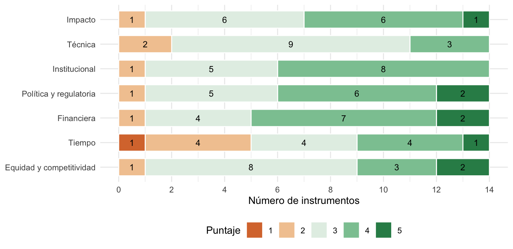
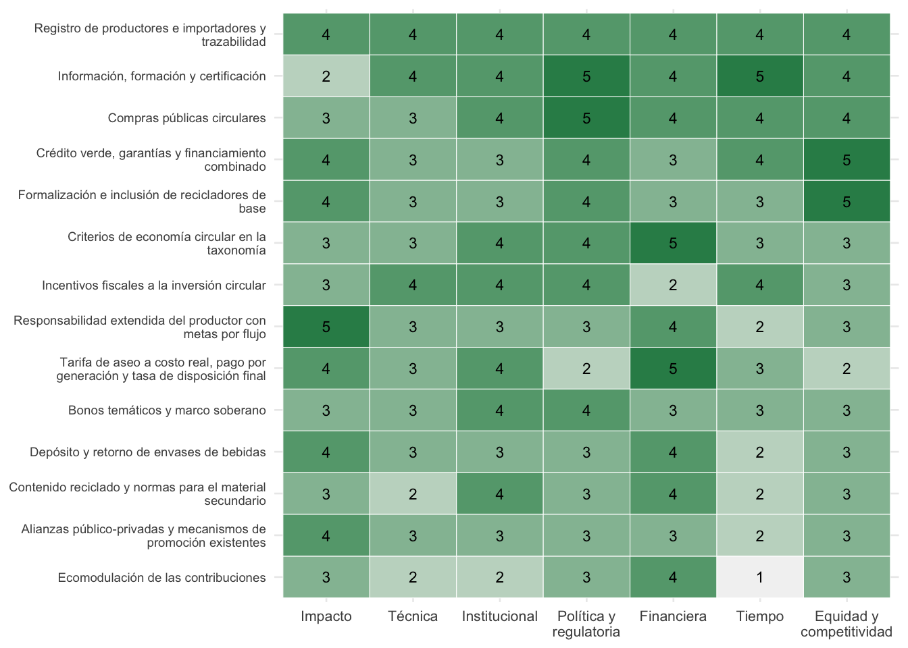
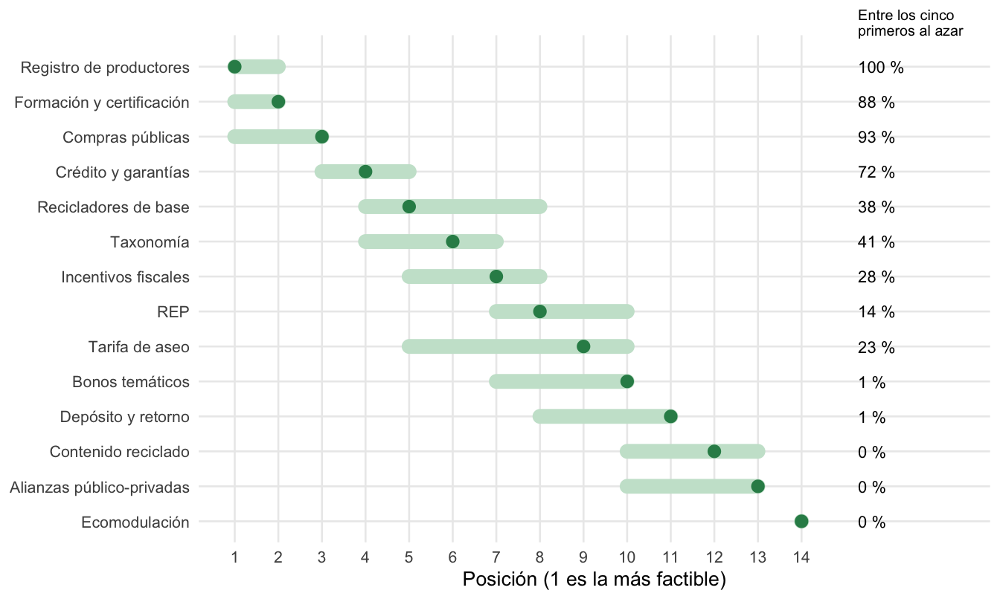
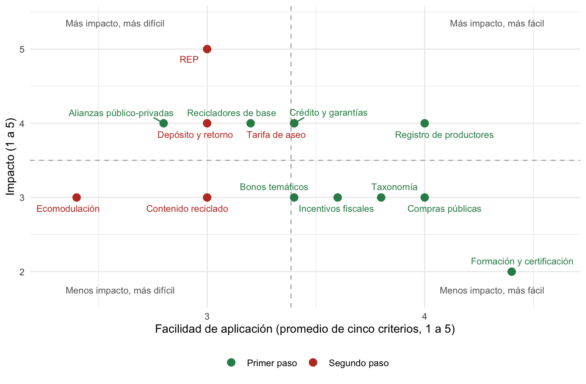
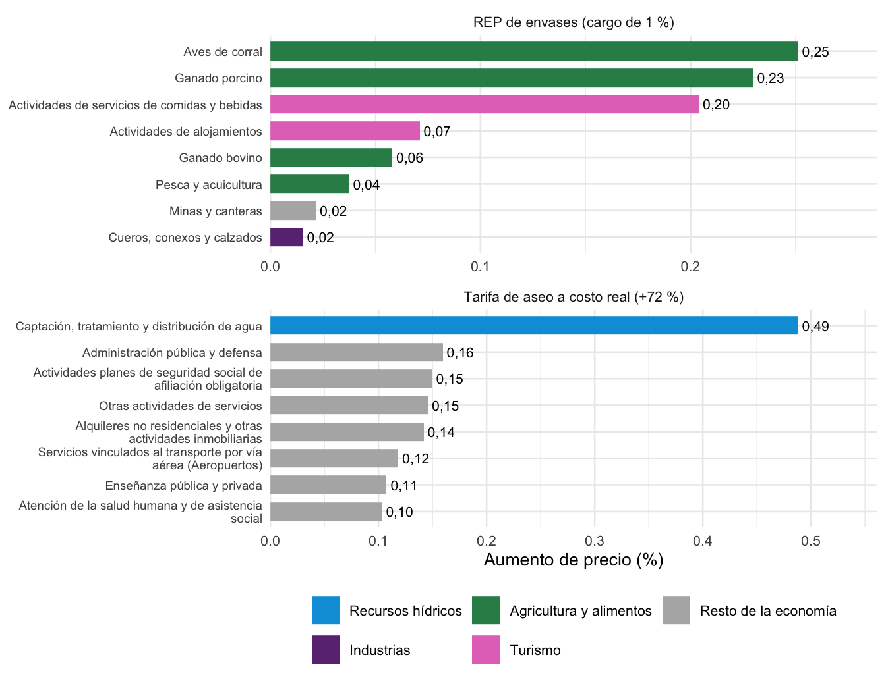
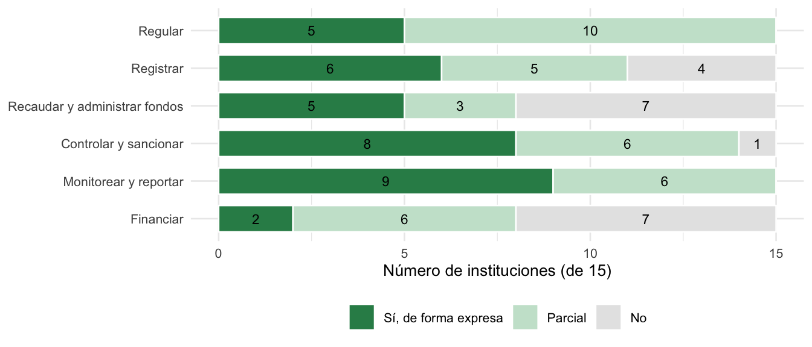
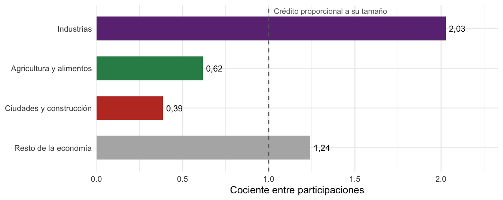
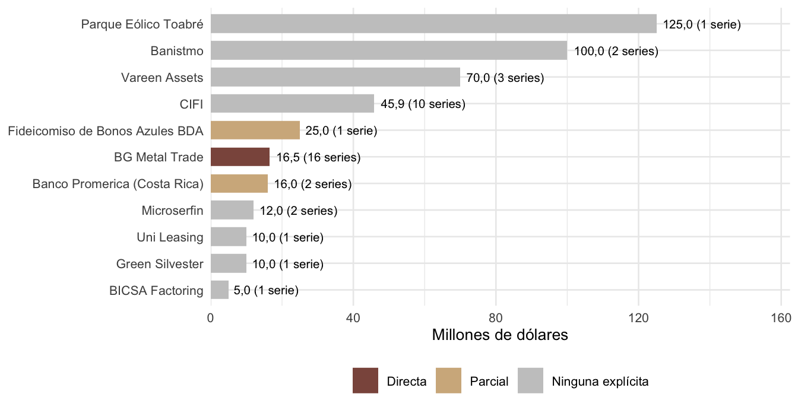

Sigla | Significado |
|---|---|
AAUD | Autoridad de Aseo Urbano y Domiciliario |
ACODECO | Autoridad de Protección al Consumidor y Defensa de la Competencia |
AMPYME | Autoridad de la Micro, Pequeña y Mediana Empresa |
APP | Asociación público-privada |
ATP | Autoridad de Turismo de Panamá |
BID | Banco Interamericano de Desarrollo |
BNP | Banco Nacional de Panamá |
CEPAL | Comisión Económica para América Latina y el Caribe |
DGCP | Dirección General de Contrataciones Públicas |
DGI | Dirección General de Ingresos |
DGNTI | Dirección General de Normas y Tecnología Industrial |
INADEH | Instituto Nacional de Formación Profesional y Capacitación para el Desarrollo Humano |
INEC | Instituto Nacional de Estadística y Censo |
ITBMS | Impuesto de transferencia de bienes muebles y servicios |
MEDUCA | Ministerio de Educación |
MEF | Ministerio de Economía y Finanzas |
MiAMBIENTE | Ministerio de Ambiente |
MICI | Ministerio de Comercio e Industrias |
MINSA | Ministerio de Salud |
MIP | Matriz insumo-producto |
MIPYME | Micro, pequeña y mediana empresa |
MITRADEL | Ministerio de Trabajo y Desarrollo Laboral |
OCDE | Organización para la Cooperación y el Desarrollo Económicos |
PET | Tereftalato de polietileno |
REP | Responsabilidad extendida del productor |
SBP | Superintendencia de Bancos de Panamá |
SMV | Superintendencia del Mercado de Valores |
SSRP | Superintendencia de Seguros y Reaseguros de Panamá |
Factibilidad de los instrumentos económicos para la economía circular en Panamá
Factibilidad política y técnica, efectos por sector, capacidades institucionales y sistema financiero nacional
Resumen ejecutivo
Una economía circular busca que los materiales se mantengan en uso el mayor tiempo posible, de modo que lo que hoy termina en un relleno sanitario vuelva a la producción como insumo. Para que eso ocurra, alguien tiene que pagar la recolección separada, la clasificación y el reciclaje, y alguien tiene que invertir en las plantas y los equipos que lo hacen posible. Los instrumentos económicos son las reglas que ordenan esos pagos e inversiones, como la responsabilidad extendida del productor, que obliga a quien vende un producto a financiar su gestión cuando se convierte en residuo, o las tarifas que cobran el servicio de aseo según lo que cuesta. Un estudio previo caracterizó con estadísticas oficiales los sectores de la economía panameña donde la circularidad es más relevante y propuso catorce de estos instrumentos, organizados en dos pasos (Vargas, 2026). Este documento pregunta si esos instrumentos se pueden aplicar en Panamá y responde con cuatro análisis que examinan la factibilidad política y técnica de cada instrumento, su efecto sobre los precios de cada sector, las capacidades de las instituciones que tendrían que aplicarlos y el sistema financiero como canal de los recursos.
Panamá ya cuenta con casi todas las facultades que estos instrumentos necesitan en leyes vigentes. La Ley 276 de 2021, que regula la gestión integral de los residuos sólidos, adopta la responsabilidad extendida del productor (REP) como principio, crea una tasa de gestión de residuos que debe cubrir el costo de todas las fases del servicio, otorga incentivos fiscales al aprovechamiento de residuos y faculta a la Autoridad de Aseo Urbano y Domiciliario (AAUD) para proponer normas de REP y autorizar los sistemas de depósito y retorno de envases (Asamblea Nacional de Panamá, 2021b, arts. 7, 52, 66 y 74). La Ley 223 de 2021 exonera de impuestos por cinco años a las plantas de reciclaje que avala el Ministerio de Ambiente (Asamblea Nacional de Panamá, 2021a). Lo que falta son los reglamentos que pongan esas facultades en operación, y el más urgente es el de la Ley 502 de 2025 de economía circular, que puede crear un registro de productores dentro de la plataforma de indicadores que esa ley ordena (Asamblea Nacional de Panamá, 2025, arts. 11 y 13).
Los cuatro análisis llevan a resultados que se refuerzan entre sí. En cuanto a la factibilidad, los instrumentos más fáciles de aplicar son los que crean las condiciones para los demás. El registro de productores e importadores obtiene el puntaje más alto (4,0 sobre 5), seguido de la información, formación y certificación (4,0), las compras públicas circulares (3,9) y el crédito con garantías (3,7), y ese orden se mantiene cuando se cambia la importancia relativa de los criterios de evaluación. En cuanto a los precios, los cargos que imponen algunos instrumentos tienen efectos pequeños: un cargo de REP equivalente a 1 % del valor de producción de los fabricantes de bienes envasados elevaría el costo de la canasta de consumo de los hogares en 0,21 %, y cobrar el servicio de aseo a su costo real la elevaría en 0,13 %. En cuanto a las instituciones, la AAUD es la única con todas las funciones legales para operar un instrumento de residuos, aunque arrastra un déficit, pues en 2025 recaudó B/.35,2 millones y gastó B/.60,6 millones (La Estrella de Panamá, 2026b). En cuanto al sistema financiero, la banca es grande pero su crédito se concentra en hipotecas, consumo y comercio, y de 435 millones de dólares en bonos temáticos que hoy cotizan en la bolsa local, solo 16 millones financian a una empresa de reciclaje.
Esto indica que la secuencia en dos pasos propuesta por el estudio sectorial es factible con el marco legal vigente. Los instrumentos del primer paso se apoyan en decretos y resoluciones de instituciones que ya tienen la facultad. Los del segundo paso, que imponen metas y cargos, pueden iniciar con resoluciones de la AAUD y tendrían una base más sólida con una ley de REP que fije metas y sanciones propias, como recomienda la Hoja de Ruta de plásticos que el Ministerio de Ambiente adoptó en 2026 (Ministerio de Ambiente de Panamá, 2026b).
Lista de cuadros y figuras
Cuadros
- Cuadro 1: Glosario de siglas
- Cuadro 2: Los catorce instrumentos por familia
- Cuadro 3: Criterios de factibilidad y rúbrica de calificación
- Cuadro 4: Ruta legal de los instrumentos
- Cuadro 5: Dependencias entre instrumentos
- Cuadro 6: Factibilidad de los instrumentos con pesos iguales y sensibilidad
- Cuadro 7: Canales por los que los instrumentos llegan a los sectores de política
- Cuadro 8: Escenarios del modelo de precios
- Cuadro 9: Aumento de precios por sector de política según el instrumento
- Cuadro 10: Aumento del costo de la canasta de consumo de los hogares
- Cuadro 11: Efectos esperados de los instrumentos financieros y de promoción
- Cuadro 12: Funciones legales de las instituciones
- Cuadro 13: Funcionarios de las instituciones con funciones en los instrumentos
- Cuadro 14: Institución que cumple cada función en cada instrumento
- Cuadro 15: Brechas institucionales y acciones de fortalecimiento
- Cuadro 16: Cartera de crédito local al sector privado por sector económico
- Cuadro 17: Emisiones temáticas vigentes en la bolsa de valores
- Cuadro 18: Actores del sistema financiero
- Cuadro 19: Oportunidades para movilizar recursos hacia la economía circular
- Cuadro 20: Puntajes y justificaciones por instrumento y criterio (anexo)
Figuras
- Figura 1: Número de instrumentos según su puntaje en cada criterio
- Figura 2: Puntajes de factibilidad por instrumento y criterio
- Figura 3: Posición de cada instrumento y rango al omitir un criterio
- Figura 4: Impacto y facilidad de aplicación de los instrumentos
- Figura 5: Actividades con mayor aumento indirecto de precio
- Figura 6: Número de instituciones según cómo tienen asignada cada función
- Figura 7: Crédito sobre valor agregado por sector de política
- Figura 8: Series temáticas vigentes por emisor y relación con la economía circular
Glosario de siglas
El Cuadro 1 reúne las siglas usadas en el documento.
1 Introducción
Panamá aprobó en 2025 la Ley 502, que dicta normas para implementar la economía circular como estrategia ambiental y declara la responsabilidad extendida del productor como uno de sus mecanismos (Asamblea Nacional de Panamá, 2025, art. 2). Aunque la ley establece el rumbo en que debe ir este tema, deja abiertas las preguntas prácticas de cómo se financiará la transición, quién pagará la recolección y el reciclaje de los materiales y por medio de qué instituciones se cobrarán y controlarán esos pagos.
Para dar respuesta a esas interrogantes, un estudio previo (Vargas, 2026) relacionó las 80 actividades económicas de las cuentas nacionales con siete sectores de política, que son los seis que prioriza la Hoja de Ruta de Economía Circular del Ministerio de Ambiente (Ministerio de Ambiente de Panamá y Programa de las Naciones Unidas para el Desarrollo, 2024) (residuos, energía, recursos hídricos, industrias, agricultura y alimentos, y ciudades y construcción) más el turismo, y caracterizó cada sector con indicadores de producción, empleo, comercio, inversión, emisiones y uso de materiales. Con base en esos datos y en la experiencia de otros países, propuso catorce instrumentos de política y los ordenó en dos pasos. En el primero van los instrumentos que crean condiciones, como un registro de productores, y en el segundo los que imponen metas o cargos y que solo funcionan cuando esas condiciones existen.
Este documento evalúa si esos catorce instrumentos son aplicables en Panamá en cuatro partes. La primera califica la factibilidad de cada instrumento con siete criterios e identifica la norma legal mínima que hace falta para aplicarlos. La segunda estima cuánto subirían los precios de cada sector de la economía cuando un instrumento impone un cargo. La tercera revisa qué instituciones tienen, por ley, las funciones necesarias para aplicar los instrumentos. La cuarta analiza el sistema financiero nacional y los canales por los que podrían llegar los recursos.
El documento forma parte de la cooperación técnica que la CEPAL presta al Ministerio de Ambiente, financiada por el programa CEPAL-BMZ/GIZ “Promoviendo la Economía Circular”. Sus cálculos se documentan en memorias de cálculo públicas.1
2 Objetivos
2.1 Objetivo general
Evaluar la factibilidad política y técnica de los instrumentos económicos propuestos para promover la economía circular en Panamá, sus efectos por sector de política y las capacidades institucionales y financieras con que cuenta el país para implementarlos.
2.2 Objetivos específicos
- Calificar cada instrumento con siete criterios de factibilidad.
- Identificar, para cada instrumento, la norma legal de menor jerarquía que basta para aplicarlo, la institución que la emite y la ley vigente que la respalda.
- Estimar el efecto de los instrumentos que operan como un cargo sobre los precios de cada sector de política y sobre el costo de vida de los hogares, y describir el efecto esperado de los instrumentos financieros.
- Evaluar las funciones legales de las instituciones públicas para regular, registrar, recaudar, controlar, monitorear y financiar los instrumentos.
- Analizar el sistema financiero nacional para identificar los mecanismos, actores e instrumentos que pueden movilizar recursos hacia la economía circular.
3 Antecedentes
3.1 Los catorce instrumentos
Los instrumentos que este documento evalúa se agrupan en seis familias, según el tipo de mecanismo con que cambian las decisiones de productores, consumidores e inversionistas (Vargas, 2026). Los instrumentos habilitantes crean la información y la base de actores que los demás necesitan, como el registro de productores e importadores y la formalización de los recicladores de base, que son las personas que recuperan materiales de los residuos, a menudo de manera informal. Los normativos y regulatorios fijan obligaciones a quienes ponen productos en el mercado, como la REP con metas de recolección y valorización, la ecomodulación (que ajusta lo que paga cada productor según qué tan reciclable es su envase) y el contenido mínimo de material reciclado. Los tributarios y tarifarios usan los precios, como el depósito reembolsable de los envases de bebidas, la tarifa de aseo a costo real y los incentivos fiscales a la inversión en reciclaje. Los financieros mueven capital hacia proyectos circulares, como los criterios de economía circular en la taxonomía de finanzas sostenibles, los bonos temáticos y el crédito con garantías. Los de promoción de inversiones incluyen las compras públicas circulares y las alianzas público-privadas, y la última familia, de capacidades, reúne la información, la formación y la certificación.
Como muestra el Cuadro 2, nueve de los catorce instrumentos corresponden al primer paso. Los cinco del segundo paso son los tres normativos y regulatorios, el depósito y retorno y la tarifa de aseo, porque son los que imponen metas o cargos a productores y hogares.
Familia | Instrumento | Mecanismo | Paso |
|---|---|---|---|
Habilitante | Registro de productores e importadores y trazabilidad | Obligación de declarar cantidades y materiales por partida arancelaria | Primero |
Formalización e inclusión de recicladores de base | Registro, organización y pago por tonelada recuperada | Primero | |
Normativo y regulatorio | Responsabilidad extendida del productor con metas por flujo | Obligación de financiar la recolección y valorización, con metas anuales | Segundo |
Ecomodulación de las contribuciones | Tarifa diferenciada según reciclabilidad y contenido reciclado | Segundo | |
Contenido reciclado y normas para el material secundario | Porcentaje mínimo de material reciclado y norma técnica de calidad | Segundo | |
Tributario y tarifario | Depósito y retorno de envases de bebidas | Depósito reembolsable al devolver el envase | Segundo |
Tarifa de aseo a costo real, pago por generación y tasa de disposición final | Tasa que cubre el costo, cobrada por cantidad, con tarifa solidaria | Segundo | |
Incentivos fiscales a la inversión circular | Exoneraciones de renta, ITBMS y arancel para equipos elegibles | Primero | |
Financiero | Criterios de economía circular en la taxonomía | Criterios técnicos de contribución sustancial a la economía circular | Primero |
Bonos temáticos y marco soberano | Emisión de deuda con uso de fondos o metas verificables | Primero | |
Crédito verde, garantías y financiamiento combinado | Líneas de largo plazo y garantías parciales | Primero | |
Promoción y facilitación de inversiones | Compras públicas circulares | Criterios de economía circular en pliegos y fichas técnicas | Primero |
Alianzas público-privadas y mecanismos de promoción existentes | Contratos de largo plazo con pagos por desempeño | Primero | |
Capacidades y conciencia ambiental | Información, formación y certificación | Formación, certificación de competencias y reporte de indicadores | Primero |
Fuente: elaboración propia con base en el estudio de sectores priorizados (Vargas, 2026).
3.2 El marco legal de los residuos y la economía circular
Cinco leyes forman el marco en el que operarían los instrumentos, y conviene presentarlas en orden cronológico porque cada una agregó piezas a la anterior. En primera instancia, la Ley 51 de 2010 creó la AAUD como responsable del servicio de aseo en la región metropolitana y le permitió fijar tasas, cobrarlas en la factura eléctrica y administrar un fondo propio (Asamblea Nacional de Panamá, 2010). La Ley 33 de 2018 estableció la Política Basura Cero y obligó a los productores e importadores de bienes cuyos residuos requieren un manejo especial, como neumáticos o aparatos electrónicos, a establecer programas de recuperación, con la posibilidad de asociarse y de adoptar sistemas de depósito y retorno (Asamblea Nacional de Panamá, 2018b, art. 6). La Ley 187 de 2020 ordenó reemplazar de forma progresiva los plásticos de un solo uso y repartió su control entre la aduana, la Autoridad de Protección al Consumidor y Defensa de la Competencia (ACODECO) y el Ministerio de Salud (Asamblea Nacional de Panamá, 2020a, art. 15).
La Ley 276 de 2021 es la pieza más importante para este documento, pues reorganizó la gestión de los residuos sólidos, adoptó la REP como principio, creó una tasa de gestión integral de residuos que debe incorporar el costo de todas las fases del servicio, otorgó incentivos fiscales al aprovechamiento y dio nuevas funciones a la AAUD, entre ellas proponer normas de REP y autorizar los sistemas colectivos de productores y los sistemas de depósito (Asamblea Nacional de Panamá, 2021b). Por último, la Ley 502 de 2025 es una ley marco de economía circular. Crea el Consejo Nacional de Economía Circular, un Plan Estratégico Nacional, una plataforma de indicadores y criterios de economía circular para las compras públicas, y deja su reglamentación al Órgano Ejecutivo por medio del Ministerio de Ambiente, sin fijar un plazo (Asamblea Nacional de Panamá, 2025, arts. 8-13).
A ese marco se suma la Ley 518 de 2026, que ordena a la AAUD reglamentar un esquema en el que los importadores de neumáticos asumen el costo de su gestión por cada unidad importada y obliga a usar caucho reciclado en el asfalto (Asamblea Nacional de Panamá, 2026b, art. 15). Es el antecedente más cercano en el país de una REP aplicada a un producto específico. La Hoja de Ruta para la gestión de los plásticos, que el Ministerio de Ambiente adoptó en 2026, constata que la REP todavía no tiene un reglamento que la haga operativa y recomienda aprobar una ley de REP (Ministerio de Ambiente de Panamá, 2026b).
3.3 Tributos y tasas en la Constitución
Para entender qué vía legal requiere cada instrumento hace falta distinguir entre un tributo y una tasa. Un tributo, como un impuesto, es un pago obligatorio al Estado que no corresponde a un servicio específico, y la Constitución exige que se establezca por ley; además, solo las comisiones permanentes de la Asamblea Nacional y el Ejecutivo, con autorización del Consejo de Gabinete, pueden proponer leyes tributarias (República de Panamá, 2016, arts. 52, 159 y 165). Una tasa, en cambio, es el pago por un servicio que se recibe, como la recolección de la basura, y la fija quien presta el servicio, sea la AAUD o el municipio (Asamblea Nacional de Panamá, 2021b, arts. 16 y 75). Antes de fijar o modificar una tasa debe hacerse una consulta ciudadana, según la Ley 6 de 2002 (Asamblea Legislativa de Panamá, 2002, arts. 24-25). Esa exigencia tiene consecuencias prácticas, pues la Sala Tercera de la Corte Suprema anuló en 2016 la tasa de aseo del municipio de San Miguelito por haberla omitido, por ejemplo (La Prensa, 2016).
3.4 El turismo y la economía circular
El estudio sectorial incorporó el turismo como séptimo sector de política, dada su importancia para Panamá, delimitado con las actividades que la Cuenta Satélite de Turismo de las Naciones Unidas considera características del turismo, como el alojamiento, la provisión de alimentos y bebidas, el transporte aéreo y las actividades recreativas (Naciones Unidas et al., 2010; Vargas, 2026). El sector genera más de la quinta parte de las exportaciones de bienes y servicios del país, es el único sector de política donde las mujeres son mayoría del empleo y está formado en su mayor parte por microempresas (Vargas, 2026). La Autoridad de Turismo de Panamá registró 3,0 millones de visitantes y un gasto turístico de B/.9.685 millones en 2025, de forma preliminar (Autoridad de Turismo de Panamá, 2026).
La política de turismo ya reconoce los problemas de residuos de los destinos. El plan maestro de turismo sostenible 2020-2025 describía la gestión de residuos como inexistente o mala en destinos como Bocas del Toro, Taboga y Pedasí (Autoridad de Turismo de Panamá, 2020, p. 56), y su actualización para 2025-2030 incluye acciones de reducción de plásticos, apoyo al programa Bandera Azul Ecológica y medición de la huella de carbono de las empresas turísticas (Autoridad de Turismo de Panamá, 2025). Existen además dos fuentes de recursos vinculadas al turismo. El hospedaje paga un ITBMS de 10 %, cuya recaudación se transfiere a la Autoridad de Turismo (Dirección General de Ingresos, Ministerio de Economía y Finanzas de Panamá, 2026), y el municipio de Taboga cobra desde 2025 un dólar por visitante con destino a la limpieza de la isla (La Estrella de Panamá, 2025).
4 Factibilidad de los instrumentos
Decir que un instrumento es factible significa que puede aplicarse con los recursos legales, institucionales, técnicos y financieros del país y que vale la pena hacerlo. Esas condiciones son de naturaleza distinta, y un mismo instrumento puede cumplir unas y fallar en otras. La REP, por ejemplo, tiene un efecto grande sobre los flujos de material y se financia sola, pero toma años ponerla en marcha. Por eso la evaluación separa la factibilidad en siete criterios, califica cada uno por separado y solo al final los combina en un orden de prioridad.
Para que las calificaciones fueran comparables entre instrumentos, antes de calificar se fijó una rúbrica que define qué significa un puntaje de 1, de 3 y de 5 en cada criterio, y los puntajes 2 y 4 se reservaron para los casos intermedios. Como muestra el Cuadro 3, los criterios van desde el efecto esperado sobre la circularidad hasta los efectos sobre la equidad y la competitividad, y en todos ellos un puntaje más alto indica una condición más favorable para aplicar el instrumento.
Criterio | Qué mide | Puntaje 1 | Puntaje 3 | Puntaje 5 |
|---|---|---|---|---|
Impacto | Efecto esperado en la circularidad de los flujos de material | Efecto indirecto, que depende de otros instrumentos | Efecto directo sobre un flujo acotado o un eslabón de la cadena | Efecto directo y grande sobre flujos de volumen alto |
Técnica | Información, infraestructura y capacidad de medición | Faltan los datos y la infraestructura básicos | Existen bases parciales que hay que completar | Todo lo necesario existe |
Institucional | Institución con la función legal y los medios | Ninguna institución tiene la función | La función existe pero es parcial o la institución tiene pocos medios | Función expresa y medios suficientes |
Política y regulatoria | Vehículo legal, base legal vigente y señales de apoyo | Requiere una ley nueva y enfrenta resistencia | Basta un decreto o resolución, con resistencia previsible | Mandato legal vigente que basta con aplicar |
Financiera | Costo fiscal y fuente sostenible de recursos | Costo fiscal alto sin fuente identificada | Depende de recursos externos o de otro instrumento | Sin costo fiscal o autofinanciado |
Tiempo | Plazo hasta la entrada en operación | Más de tres años o solo después de otros instrumentos | Uno a dos años de preparación | Puede iniciar de inmediato |
Equidad y competitividad | Efectos sobre hogares pobres, pymes, empleo y competencia | Efectos regresivos o barreras para pymes sin compensación | Efectos mixtos que pueden compensarse con el diseño | Efectos positivos o neutrales |
Fuente: elaboración propia.
Cada uno de los 98 puntajes, que resultan de calificar 14 instrumentos en 7 criterios, se asignó con base en evidencia concreta, que puede ser el artículo de una ley vigente, un dato estadístico o la experiencia documentada de otro país. Cada puntaje lleva una justificación escrita y un nivel de confianza. La confianza es alta cuando la calificación del instrumento descansa sobre todo en textos legales y datos oficiales, y media cuando depende de la experiencia internacional o de supuestos de diseño que todavía no se han fijado. De los catorce instrumentos, 6 tienen confianza alta y 8, confianza media. El anexo reproduce los 98 puntajes con sus justificaciones, de modo que el lector puede revisar cada calificación y discrepar de ella con fundamento.
Una primera mirada a los puntajes, antes de entrar en cada criterio, muestra dónde están las restricciones del país. Como muestra la Figura 1, el tiempo de implementación y la factibilidad técnica concentran los puntajes más bajos, con medias de 3,0 y 3,1, y ningún instrumento obtiene 5 en factibilidad técnica; es decir, ninguno encuentra hoy toda la información y la infraestructura que necesita. La factibilidad financiera y la política y regulatoria tienen las medias más altas (3,7 y 3,6). Esa distribución anticipa el hallazgo principal de esta sección, según el cual las restricciones de Panamá están menos en las leyes y en el dinero que en los datos, en los plazos y en la operación de las instituciones.

Fuente: elaboración propia.
Las subsecciones siguientes recorren los criterios uno por uno. En cada una se explica cómo se calificó y qué revela el resultado. Al final, los siete criterios se combinan en un orden de prioridad y se prueba qué tan estable es ese orden cuando cambia la importancia que se da a cada criterio.
4.1 Impacto sobre los flujos de material
El criterio de impacto pregunta cuánto cambiaría el instrumento la cantidad de material que vuelve a la producción en lugar de terminar en un relleno sanitario. Para calificarlo se hicieron dos preguntas. La primera es si el instrumento actúa directamente sobre un flujo de material o solo a través de otros instrumentos, y la segunda es qué tan grande es el flujo sobre el que actúa. El tamaño de los flujos proviene de las estadísticas de residuos del estudio sectorial, y el efecto esperado, de la experiencia de los países que ya aplican cada instrumento.
La REP es el único instrumento con el puntaje máximo, porque traslada al precio de los productos el costo de gestionar sus residuos y financia la recolección de los flujos más grandes. Los materiales de envase representan hasta 38 % del peso de los residuos municipales (Vargas, 2026), y en Chile el estudio de impacto del decreto de envases estimó que los beneficios del sistema superan sus costos en 19 % (Ministerio del Medio Ambiente de Chile, 2020). Seis instrumentos obtienen 4 puntos. El depósito y retorno alcanza tasas de recolección superiores a 85 % en los sistemas europeos que operan plenamente (Sidorczuk-Pietraszko et al., 2025); la tarifa de aseo a costo real financia la recolección selectiva y encarece mezclar o verter; los recicladores de base recuperan la mayor parte del material que hoy se recicla en el país; el crédito con garantías llega a pymes y recuperadores que la banca no atiende; las alianzas público-privadas permiten construir infraestructura de valorización a escala y el registro de productores es la base de cálculo de cualquier meta o contribución. En el otro extremo, la información, la formación y la certificación obtienen 2 puntos, porque su efecto sobre los flujos es indirecto.
El impacto se concentra, entonces, en los instrumentos que mueven dinero hacia la recolección y el reciclaje o que crean la información para hacerlo. Los criterios siguientes muestran que ese mismo rasgo los hace más difíciles de aplicar.
4.2 Factibilidad técnica e institucional
La factibilidad técnica pregunta si existen la información, la infraestructura y la capacidad de medición que el instrumento necesita desde el primer día. La factibilidad institucional pregunta si alguna institución tiene la función legal de aplicarlo y los medios para hacerlo. Conviene leer ambos criterios juntos, porque se condicionan entre sí. Un registro sin una institución que lo opere no existe, y una institución sin datos no puede cobrar ni controlar. La calificación institucional se apoya en la revisión de las leyes de creación de quince instituciones que se presenta en la Sección 6.
En lo técnico, la carencia que más se repite es la información sobre lo que se pone en el mercado. Hoy nadie sabe cuántas toneladas de envases, aparatos o neumáticos venden los productores e importadores y sin ese dato no se pueden fijar metas, calcular contribuciones ni verificar el cumplimiento. El registro de productores obtiene 4 puntos porque puede construirse sobre sistemas que ya funcionan. Las importaciones se declaran en aduana por partida arancelaria, que es el código que identifica cada tipo de producto; el reglamento de la ley de plásticos ya exige una certificación previa del MICI para ciertas importaciones, y la Ley 276 encarga a la AAUD un sistema de información sobre la gestión de residuos (Ministerio de Ambiente de Panamá, 2022, arts. 7-13; Asamblea Nacional de Panamá, 2021b, arts. 22-23). La formalización de los recicladores enfrenta una carencia parecida, pues el único conteo disponible de esa población es de 2010. Los puntajes más bajos (2) corresponden a la ecomodulación, que exige criterios de reciclabilidad y datos por producto, así como al contenido reciclado, porque la capacidad nacional de producir material reciclado de calidad es limitada. Así lo indica que la recuperación de materiales se reparta entre 77 empresas con menos de cuatro empleados en promedio y que el plástico recuperado que se exporta equivalga a apenas 2 % del plástico que llega a los residuos municipales (Vargas, 2026).
En lo institucional, la situación es mejor de lo que suele suponerse. Ocho instrumentos obtienen 4 puntos porque una institución ya tiene la función expresa, como la DGCP para las compras públicas, el MICI para las normas técnicas de contenido reciclado o la AAUD y los municipios para la tarifa de aseo. La REP y el depósito obtienen 3 puntos por una razón particular. La AAUD tiene la facultad legal de autorizar y fiscalizar los sistemas de REP y de depósito (Asamblea Nacional de Panamá, 2021b, art. 74), pero gasta mucho más de lo que recauda, de modo que la facultad existe y los medios para ejercerla todavía no. La ecomodulación obtiene 2 puntos porque necesita sistemas colectivos de productores que aún no existen.
La lectura conjunta de los dos criterios revela una dependencia en cadena. Casi todos los instrumentos del segundo paso necesitan saber cuánto ponen en el mercado los productores e importadores, y esa información hoy no es recolectada por ningún mecanismo existente, aunque las piezas para esa recolección están repartidas entre la aduana, el MICI y la AAUD. El registro se constituye así como la pieza que habilita a los demás.
4.3 Factibilidad política y regulatoria: la ruta legal
El criterio político y regulatorio reúne tres elementos, que son la norma legal mínima que hace falta para aplicar el instrumento, la existencia de una ley vigente que la respalde y las señales de apoyo o de resistencia. Un instrumento puede requerir una ley aprobada por la Asamblea, un decreto ejecutivo, una resolución de una institución o un acuerdo municipal, y cuanto más alta es la jerarquía de la norma, más tiempo y consenso político requiere. Por eso, para cada instrumento se buscó la norma de menor jerarquía que basta para aplicarlo sin exceder lo que permiten las leyes vigentes, la institución que tiene la facultad de emitirla y la ley que respalda esa facultad. La búsqueda se hizo sobre los textos publicados en la Gaceta Oficial y en la base de datos legislativa Legispan de la Asamblea Nacional, y aplicó la distinción constitucional entre tributos, que requieren ley, y tasas por un servicio, que fija quien lo presta. Las señales políticas se tomaron de los proyectos de ley en trámite, de la Hoja de Ruta de plásticos y de los precedentes judiciales.
La revisión legal da como resultado una buena noticia, pues el marco vigente permite iniciar doce de los catorce instrumentos sin aprobar una ley nueva. Como muestra el Cuadro 4, el registro, la formalización de recicladores, la tarifa a costo real, las compras públicas, los criterios de la taxonomía, los bonos, el crédito con garantía y las alianzas público-privadas se apoyan en decretos, resoluciones o acuerdos de instituciones que ya tienen la facultad. La REP y el depósito pueden empezar con resoluciones de la AAUD, porque la Ley 276 la faculta para proponer normas de REP y autorizar los sistemas de gestión y de depósito (Asamblea Nacional de Panamá, 2021b, art. 74). Sin embargo, las metas cuantitativas con sanciones propias y un depósito obligatorio cobrado al consumidor tendrían una base más sólida en una ley específica, que reduce el riesgo de que un tribunal las anule por exceder la ley que reglamentan. Los incentivos fiscales nuevos requieren una ley, como todo beneficio tributario, pero los que ya otorgan las leyes 223 y 276 solo necesitan su reglamento (Asamblea Nacional de Panamá, 2021a; Asamblea Nacional de Panamá, 2021b, art. 52).
Instrumento | Vehículo legal mínimo | Base legal vigente | Responsable |
|---|---|---|---|
Registro de productores e importadores y trazabilidad | Decreto ejecutivo reglamentario de la Ley 502 o de la Ley 276, y resolución de la AAUD por flujo | Ley 502, art. 11; Ley 276, art. 22-23 y 54; Ley 51, art. 6-A | MiAMBIENTE y AAUD, con datos de Aduanas y del MICI |
Formalización e inclusión de recicladores de base | Decreto ejecutivo reglamentario de la Ley 276 (gradualidad) y resoluciones de la AAUD; acuerdos municipales | Ley 276, art. 6.41, 29, 30 y 50-51; Ley 33, art. 4.5, 8 y 19; Ley 502, art. 10 | AAUD y municipios; MITRADEL e INADEH para la certificación |
Responsabilidad extendida del productor con metas por flujo | Decreto ejecutivo y resoluciones de la AAUD; ley de REP para metas con sanciones propias | Ley 276, art. 6.40, 7.8 y 36; Ley 51, art. 6-A num. 2, 6, 14 y 15; Ley 33, art. 6 | AAUD (autoriza y fiscaliza sistemas de gestión) y MiAMBIENTE |
Ecomodulación de las contribuciones | Igual que la REP si la cobra un sistema de productores; ley si la cobra el Estado | Ley 502, art. 3; Ley 276, art. 7.3 | Sistemas de gestión autorizados por la AAUD |
Depósito y retorno de envases de bebidas | Autorización de la AAUD para un sistema sectorial; ley para un sistema obligatorio | Ley 51, art. 6-A num. 14; Ley 33, art. 6 | Administrador del sistema (productores), autorizado por la AAUD; Aduanas y ACODECO en el control |
Contenido reciclado y normas para el material secundario | Reglamento técnico DGNTI-COPANIT por resolución del MICI; decreto para la obligación | Ley 276, art. 8.21 y 30.1; Ley 33, art. 27; Ley 518 de 2026 | MICI (DGNTI) y MiAMBIENTE |
Tarifa de aseo a costo real, pago por generación y tasa de disposición final | Resolución de la Junta Directiva de la AAUD o acuerdo municipal, con participación ciudadana | Ley 276, art. 6.62, 16.9, 66 y 75; Ley 6 de 2002, art. 24-25 | AAUD y municipios; distribuidoras eléctricas para el cobro |
Incentivos fiscales a la inversión circular | Reglamento del MEF para los incentivos vigentes; ley orgánica para incentivos nuevos | Ley 223 de 2021, art. 3-7; Ley 276, art. 52 | MEF (DGI) con aval técnico de MiAMBIENTE y AAUD |
Compras públicas circulares | Resolución de la DGCP; decreto que reglamente el art. 53 de la Ley 276 | Ley 22 de 2006, art. 40 (modificado por la Ley 502, art. 12); Ley 276, art. 53; Ley 33, art. 28 | Dirección General de Contrataciones Públicas |
Criterios de economía circular en la taxonomía | Nueva edición técnica de la taxonomía; acuerdo de las superintendencias para su uso obligatorio | Taxonomía de Finanzas Sostenibles de 2024 (objetivo de economía circular) | SBP, SMV y SSRP con el Grupo de Trabajo de Finanzas Sostenibles; MiAMBIENTE y MEF |
Bonos temáticos y marco soberano | Resolución del MEF (marco vigente) dentro de los límites de endeudamiento | Marco de Financiamiento Sostenible (MEF-RES-2024-1529); guía de bonos temáticos de la SMV | MEF (Crédito Público); emisores privados y SMV |
Crédito verde, garantías y financiamiento combinado | Resoluciones de la banca pública y del fiduciario del Fondo de Garantías | Ley 276, art. 30.4 y 76; Ley 502, art. 2 y 4; Acuerdo 8-2025 de la SBP | Banco Nacional de Panamá, AMPYME y MEF, con el BID y BID Invest |
Alianzas público-privadas y mecanismos de promoción existentes | Aplicación de la Ley 93 de 2019, la Ley 276 y la Ley 22; concesiones municipales | Ley 93 de 2019; Ley 276, art. 14, 46 y 59-62 | Secretaría Nacional de APP, AAUD y municipios |
Información, formación y certificación | Resoluciones ministeriales y reglamento de la plataforma de indicadores | Ley 502, art. 5-7 y 11; Ley 276, art. 25-27 y 30.5 | MiAMBIENTE, MICI, MEDUCA, INADEH y AAUD; ATP en turismo |
Fuente: elaboración propia con base en la Constitución, las leyes 502 de 2025, 276 de 2021, 223 de 2021, 518 de 2026, 51 de 2010, 33 de 2018, 187 de 2020, 22 de 2006 y 93 de 2019, y la taxonomía y el marco de financiamiento sostenible.
Los puntajes políticos reflejan esa ruta. Las compras públicas y la formación obtienen 5 puntos porque el mandato ya está en la ley y basta con aplicarlo; la Ley 502 modificó la ley de contrataciones para que la DGCP establezca criterios de economía circular en las compras de todas las entidades (Asamblea Nacional de Panamá, 2025, art. 12), y la Ley 276 ordena fomentar la compra de productos con material reciclado en el país (Asamblea Nacional de Panamá, 2021b, art. 53). La tarifa de aseo obtiene el puntaje político más bajo (2), aunque su vía legal es una simple resolución, porque cualquier alza de tarifas es sensible y debe pasar por consulta ciudadana. No hacer esa consulta puede tener efectos negativos, como ya sucedió en 2016, cuando su omisión llevó a anular la tasa de aseo de San Miguelito (La Prensa, 2016).
La experiencia legislativa reciente indica que la vía reglamentaria es la más rápida, aunque tampoco es automática. Los reglamentos de las leyes 33 de 2018 y 276 de 2021 todavía no se han publicado, y el de la Ley 502 se empezó a redactar en 2026 (Ministerio de Ambiente de Panamá, 2026a). La Asamblea, en cambio, aprueba con rapidez prohibiciones y plazos cuando hay consenso, como lo muestran las leyes de bolsas y de plásticos de un solo uso (Asamblea Nacional de Panamá, 2018a, 2020a). Las ideas del depósito y de la REP ya tienen promotores en el órgano legislativo, pues a febrero de 2026 estaba en segundo debate un proyecto de ley de máquinas de reembolso de envases de PET, aluminio y vidrio, y se había presentado un anteproyecto sobre envases de poliestireno que incluye REP y aportes diferenciados según el tipo de envase (Asamblea Nacional de Panamá, 2026a).
4.4 Factibilidad financiera
El criterio financiero hace dos preguntas, cuánto le cuesta el instrumento al fisco y si tiene una fuente de recursos propia y sostenible. Un instrumento que se paga con las contribuciones de los productores o con las tarifas de los usuarios obtiene un puntaje alto, y uno que depende del presupuesto o de renunciar a impuestos obtiene uno bajo. La calificación toma en cuenta el espacio fiscal del país, que es estrecho, pues los ingresos tributarios del Gobierno Central equivalen a cerca de 7 % del producto interno bruto (Instituto Nacional de Estadística y Censo (INEC), 2026) y la regla fiscal reduce el déficit permitido hasta 1,5 % del producto en 2030 (García Armuelles, 2026).
Los resultados desmienten la creencia frecuente de que la economía circular requiere grandes recursos públicos. La tarifa de aseo a costo real obtiene 5 puntos porque cerraría una brecha documentada, ya que la AAUD recaudó B/.35,2 millones en 2025 y gastó B/.60,6 millones (La Estrella de Panamá, 2026b), y la taxonomía también obtiene 5 por su bajo costo. La REP, el depósito, la ecomodulación y el contenido reciclado obtienen 4 puntos porque los pagan los productores. Obtienen también 4 puntos las compras públicas, porque no tienen costo adicional si se compra según el costo del ciclo de vida, así como el registro y la formación, cuyo costo es bajo. En el caso de la REP, la OCDE estima que administrar los sistemas colectivos cuesta entre 5 % y 10 % del total, mientras que la recolección y la clasificación concentran entre 60 % y 80 % (Organización para la Cooperación y el Desarrollo Económicos, 2016), lo que significa que casi todo lo que pagan los productores llega a la cadena de recuperación. En el otro extremo, los incentivos fiscales obtienen 2 puntos, porque son gasto tributario en un país con ingresos tributarios bajos. Los recicladores, los bonos, el crédito y las alianzas público-privadas obtienen 3 puntos porque su sostenibilidad depende de otra fuente, sea la REP o la tasa de aseo, la regla fiscal o los recursos de la banca multilateral.
Los instrumentos con más impacto son, por tanto, los que se pagan solos, porque trasladan el costo a quien pone el producto en el mercado o a quien usa el servicio. La pregunta financiera de fondo es quién paga, y la respuesta de los instrumentos del segundo paso, que son los productores y los usuarios, explica la resistencia política descrita en el criterio anterior.
4.5 Tiempo de implementación
El criterio de tiempo mide el plazo hasta que el instrumento entra en operación. Ese plazo incluye el tiempo de dictar la norma, el de preparar los sistemas y, sobre todo, el de esperar a que existan los instrumentos de los que depende. Un instrumento que puede iniciar de inmediato obtiene 5 puntos, uno que necesita uno o dos años de preparación obtiene 3, y uno que solo puede operar después de otros obtiene 1.
El tiempo es el criterio con la media más baja, y la razón está en las dependencias entre instrumentos. Como muestra el Cuadro 5, la REP necesita el registro, la ecomodulación necesita la REP, el pago a los recicladores necesita la REP o la tarifa, y las alianzas público-privadas necesitan una tarifa que pague el servicio. Por eso la ecomodulación obtiene 1 punto y la REP, el depósito, el contenido reciclado y las alianzas público-privadas obtienen 2, mientras que la formación obtiene 5 y el registro, los incentivos vigentes, las compras públicas y el crédito con garantía obtienen 4, porque pueden empezar en un año sobre normas, sistemas o fondos que ya existen.
Instrumento | Requiere antes | Por qué |
|---|---|---|
REP con metas por flujo | Registro de productores e importadores | Las contribuciones y las metas se calculan sobre lo que cada productor pone en el mercado |
Ecomodulación | REP con sistemas colectivos en operación | Es un ajuste de las contribuciones que cobra el sistema colectivo |
Depósito y retorno | Registro y control en frontera | Sin control, entran envases que no pagaron el depósito y se cobran al devolverlos, como ocurrió en Ecuador |
Pago a recicladores de base | Censo y registro de recicladores; REP o tarifa de aseo | Alguien debe pagar por cada tonelada recuperada y saber a quién |
Contenido reciclado | Oferta nacional de material recuperado | Sin oferta, la obligación encarece la producción o se incumple |
Alianzas público-privadas | Tarifa de aseo a costo real | El operador privado necesita un flujo de pagos confiable durante el contrato |
Bonos temáticos y crédito verde | Criterios circulares en la taxonomía y cartera de proyectos | Sin criterios no se puede etiquetar ni verificar una inversión como circular |
Fuente: elaboración propia con base en las fichas de los instrumentos y en la experiencia de Ecuador (Servicio de Rentas Internas del Ecuador, 2014).
Las dependencias explican por qué los instrumentos de mayor impacto son lentos, pues cada uno espera a otro. También muestran dónde conviene empezar. El registro de productores, la tarifa de aseo a costo real y los criterios de la taxonomía son la raíz de tres cadenas distintas, la de la REP, la de la infraestructura de residuos y la del financiamiento, y cada mes que se adelanten acorta el plazo de los instrumentos que dependen de ellos.
4.6 Equidad y competitividad
El último criterio pregunta quién gana y quién pierde con el instrumento. Considera el efecto sobre los hogares de menores ingresos, sobre las pequeñas empresas, sobre el empleo y sobre la competencia entre productores nacionales e importados. Para los instrumentos que imponen un cargo, la calificación usa las estimaciones de precios de la Sección 5; para los demás, el perfil de los sectores del estudio sectorial, que muestra, por ejemplo, que el turismo emplea a una mayoría de mujeres y está formado sobre todo por microempresas (Vargas, 2026).
Dos instrumentos obtienen el puntaje máximo. La formalización de los recicladores mejora los ingresos y la protección de la población de bajos recursos e informal, y el crédito con garantías favorece a microempresas, a mujeres empleadas en el turismo y a recicladores organizados. La tarifa de aseo obtiene el puntaje más bajo (2), porque una tarifa igual para todos pesa más en el presupuesto de los hogares de los deciles más bajos. La Ley 276 ya ofrece la respuesta, pues ordena que la tasa considere el nivel socioeconómico de cada comunidad, lo que permite cobrar menos a los hogares de menores ingresos (Asamblea Nacional de Panamá, 2021b, arts. 66 y 75). La REP obtiene 3 puntos, porque un cargo de 1 % sobre los fabricantes de bienes envasados elevaría el costo de la canasta de los hogares en 0,2 % y porque los importadores pagan lo mismo que los productores nacionales, de modo que no se altera la competencia entre ambos. El depósito y las alianzas público-privadas también obtienen 3 puntos por un riesgo que conviene anticipar en el diseño, el de desplazar a los recicladores que hoy recuperan los envases, que se evita incorporándolos como operadores de los puntos de retorno y de las plantas.
4.7 Del puntaje por criterio al orden de prioridad
Para pasar de siete puntajes a un orden de prioridad se calculó el promedio de cada instrumento, lo que equivale a dar el mismo peso a todos los criterios. El perfil completo de cada instrumento confirma lo que los criterios mostraron por separado. Como muestra la Figura 2, los instrumentos del primer paso tienen perfiles similares, con puntajes de 3 y 4 en casi todos los criterios, mientras que los del segundo paso combinan puntajes altos en impacto y en lo financiero con puntajes bajos en tiempo, en lo técnico o en lo político.

Fuente: elaboración propia. Los instrumentos están ordenados de mayor a menor puntaje medio.
Al promediar, los instrumentos del primer paso quedan arriba porque se apoyan en mandatos legales vigentes, cuestan poco y pueden iniciar pronto. Como muestra el Cuadro 6, el registro de productores e importadores encabeza la lista con 4,00 puntos de 5, seguido de la información, formación y certificación, las compras públicas circulares y el crédito verde con garantías. La REP, la tarifa de aseo a costo real y el depósito de envases, que tienen el mayor impacto, quedan en la mitad inferior, y la ecomodulación queda al final porque solo puede operar cuando la REP ya existe.
Posición | Instrumento | Paso | Puntaje medio | Rango de posiciones al omitir un criterio | Entre los cinco primeros con pesos al azar (%) |
|---|---|---|---|---|---|
1 | Registro de productores e importadores y trazabilidad | Primero | 4,0 | 1 a 2 | 100,0 |
2 | Información, formación y certificación | Primero | 4,0 | 1 a 2 | 88,1 |
3 | Compras públicas circulares | Primero | 3,9 | 1 a 3 | 93,1 |
4 | Crédito verde, garantías y financiamiento combinado | Primero | 3,7 | 3 a 5 | 72,5 |
5 | Formalización e inclusión de recicladores de base | Primero | 3,6 | 4 a 8 | 37,6 |
6 | Criterios de economía circular en la taxonomía | Primero | 3,6 | 4 a 7 | 41,1 |
7 | Incentivos fiscales a la inversión circular | Primero | 3,4 | 5 a 8 | 28,4 |
8 | Responsabilidad extendida del productor con metas por flujo | Segundo | 3,3 | 7 a 10 | 14,5 |
9 | Tarifa de aseo a costo real, pago por generación y tasa de disposición final | Segundo | 3,3 | 5 a 10 | 22,7 |
10 | Bonos temáticos y marco soberano | Primero | 3,3 | 7 a 10 | 0,6 |
11 | Depósito y retorno de envases de bebidas | Segundo | 3,1 | 8 a 11 | 1,4 |
12 | Contenido reciclado y normas para el material secundario | Segundo | 3,0 | 10 a 13 | 0,0 |
13 | Alianzas público-privadas y mecanismos de promoción existentes | Primero | 3,0 | 10 a 13 | 0,0 |
14 | Ecomodulación de las contribuciones | Segundo | 2,6 | 14 a 14 | 0,0 |
Fuente: elaboración propia. El puntaje medio da el mismo peso a los siete criterios. La última columna resulta de repartir el peso entre los criterios al azar 10.000 veces.
Dar el mismo peso a todos los criterios es un punto de partida razonable, pero distintos lectores pueden considerar que algunos importan más que otros; un ministerio de finanzas puede dar más peso al criterio financiero, y una autoridad ambiental, al impacto. Para saber si el orden depende de esa elección se hicieron dos pruebas de sensibilidad. La primera elimina un criterio a la vez y vuelve a calcular el orden, lo que muestra si algún criterio por sí solo determina el resultado. La segunda reparte al azar el peso total entre los siete criterios, 10.000 veces y sin favorecer a ninguno, y cuenta en qué proporción de esos repartos cada instrumento queda entre los cinco primeros. Un instrumento que aparece entre los cinco primeros en casi todos los repartos es una prioridad que no depende de cómo se ponderen los criterios.
Las pruebas confirman el orden en sus extremos y revelan cuáles instrumentos dependen de los pesos. Como muestra la Figura 3, el registro nunca baja del segundo lugar al eliminar un criterio y queda entre los cinco primeros en 100 % de los repartos al azar, y las compras públicas y la formación lo hacen en más de 85 %. En el extremo opuesto, la ecomodulación ocupa el último lugar en todas las pruebas. El instrumento más sensible a los pesos es la tarifa de aseo, que sube del noveno al quinto lugar cuando se elimina el criterio de equidad o el político. Sus puntajes institucional y financiero son altos (4 y 5); lo que la frena son la equidad y la aceptación política, dos criterios que dependen del diseño de la tarifa y de cómo se comunica. Una tarifa escalonada por nivel socioeconómico, con una consulta ciudadana bien preparada, actuaría justo sobre esos dos frenos.

Fuente: elaboración propia. El punto indica la posición con pesos iguales y la barra, el rango de posiciones al eliminar un criterio a la vez. La cifra de la derecha es la proporción de 10.000 repartos de pesos al azar en que el instrumento queda entre los cinco primeros.
4.8 La disyuntiva entre impacto y facilidad
El puntaje medio mezcla dos preguntas que conviene separar. Por un lado tenemos cuánto cambia el instrumento los flujos de material y, por otro, qué tan fácil es ponerlo en marcha. Para hacer esa separación, se tomó el criterio de impacto como una medida y el promedio de los criterios técnico, institucional, político y regulatorio, financiero y de tiempo como otra, que aquí se llama facilidad de aplicación. El criterio de equidad queda fuera de ambas, porque describe a quién beneficia o perjudica el instrumento.
Al cruzar las dos medidas aparece la disyuntiva central de la política. Como muestra la Figura 4, la correlación entre impacto y facilidad es negativa (-0,43). Los instrumentos con más impacto, como la REP, el depósito y las alianzas público-privadas, están entre los más difíciles de aplicar, y los más fáciles, como la formación, las compras públicas y la taxonomía, tienen un efecto más indirecto. Tres instrumentos combinan un impacto alto con una facilidad igual o superior al promedio, que son el registro de productores, el crédito con garantías y la tarifa de aseo. Los dos primeros encabezan la secuencia, y la tarifa depende sobre todo de resolver su aceptación política y su efecto en los hogares de menos recursos, dos aspectos que este cruce no mide y que la prueba de sensibilidad ya había señalado. Esa disyuntiva es la razón de fondo para avanzar en dos pasos, empezando por lo que es fácil y habilita lo demás, de modo que cuando lleguen los instrumentos de mayor impacto ya existan el registro, los criterios y la tarifa que necesitan.

Fuente: elaboración propia. La facilidad de aplicación es el promedio de los criterios técnico, institucional, político y regulatorio, financiero y de tiempo. Las líneas punteadas marcan los promedios de los catorce instrumentos.
5 Efectos por sector de política
Los catorce instrumentos no llegan a los sectores de la economía por el mismo camino, y cada camino requiere un método distinto para medir su efecto. Algunos imponen un cargo, que sube los costos de quien lo paga y viaja por la cadena de compras hasta los demás sectores. Otros cambian el costo o el acceso al capital, o crean una demanda estable para ciertos productos, y benefician a los sectores que tienen proyectos que califican. Los restantes crean la información, los actores y las reglas que usan los demás, y su efecto por sector pasa por esos otros instrumentos. Como muestra el Cuadro 7, el primer grupo se analiza con un modelo cuantitativo de precios y los otros dos con un análisis cualitativo estructurado.
Canal | Instrumentos | Cómo llega el efecto a los sectores | Método |
|---|---|---|---|
Cargo sobre un producto o un servicio | REP, depósito y retorno, tarifa de aseo a costo real y tasa de disposición final | Sube el costo de quien paga, que lo traslada a sus clientes a lo largo de la cadena de compras | Modelo de precios de insumo-producto |
Costo y acceso al capital o a la demanda | Incentivos fiscales, compras públicas, taxonomía, bonos temáticos, crédito con garantías y alianzas público-privadas | Baja el costo del capital, reduce el riesgo que percibe la banca o crea demanda estable para los proyectos que califican | Análisis cualitativo con cuatro preguntas |
Condiciones habilitantes | Registro de productores, formalización de recicladores, ecomodulación, contenido reciclado y formación | Crean la información, los actores y las reglas que usan los demás instrumentos | Análisis cualitativo |
Fuente: elaboración propia.
5.1 Instrumentos que operan como cargo
Tres de los catorce instrumentos imponen un cargo. La REP obliga a los fabricantes e importadores de bienes envasados a pagar por la gestión de sus envases, el depósito y retorno tiene un costo de operación que pagan los productores de bebidas y la tarifa de aseo a costo real, junto con la tasa de disposición final de los residuos de obra, encarece el servicio de aseo y el vertido. Ese cargo no se queda en quien lo paga, porque sus clientes también ven subir sus costos. Si una fábrica de bebidas paga una contribución por sus envases y la traslada a su precio, los restaurantes que compran esas bebidas también enfrentan un costo mayor, y lo trasladan a sus propios clientes.
Para medir esa cadena de traslados se usó la matriz insumo-producto de 2018, que registra cuánto compra cada una de las 76 actividades económicas de la matriz a cada una de las demás (Instituto Nacional de Estadística y Censo (INEC), Contraloría General de la República, 2024). La matriz tiene 76 actividades, y no las 80 de las cuentas nacionales, porque reúne en una sola actividad la pesca y la acuicultura (AE14), los tres tipos de comercio (AE44) y dos actividades de apoyo al transporte por agua (AE52). Con ella se puede seguir un aumento de costo de proveedor en proveedor hasta sumar todos los efectos indirectos, un procedimiento que la literatura llama modelo de precios de Leontief (Miller y Blair, 2022). En notación matricial, el aumento de los precios es \(\Delta \mathbf{p}' = \Delta \mathbf{c}' \mathbf{L}\), donde \(\Delta \mathbf{c}\) es el aumento de costo por unidad producida en las actividades que pagan el cargo y \(\mathbf{L}\) es la inversa de Leontief, que resume todas las rondas de compras entre actividades.
El modelo supone que cada actividad traslada por completo el aumento de sus costos a su precio y que nadie cambia lo que compra ni cómo produce. En la realidad, parte del cargo la absorben los márgenes y, con el tiempo, productores y consumidores cambian de envase o de material, que es precisamente lo que el instrumento busca. Por eso los resultados deben leerse como el efecto máximo de corto plazo.
Cada instrumento se tradujo en un escenario que define quién paga y cuánto. Cuando el monto depende de un diseño que todavía no existe, como la contribución de la REP, se usó un cargo de referencia de 1 % del valor de la producción, y cuando hay un dato documentado, como la brecha financiera de la AAUD, se usó ese dato. Como muestra el Cuadro 8, los cuatro escenarios cubren desde un cargo concentrado en una sola actividad, como el depósito sobre las bebidas, hasta uno repartido entre diez actividades, como la REP.
Escenario | Quién paga | Actividades de la matriz | Tamaño del cargo | Origen del parámetro |
|---|---|---|---|---|
REP de envases | Fabricantes de alimentos, bebidas, químicos de consumo y farmacéuticos, e importadores de esos bienes | AE16 a AE23, AE29 y AE30 | 1 % del valor de la producción | Cargo de referencia; el monto real depende del diseño |
Depósito y retorno | Industria de bebidas | AE23 | 1 % del valor de la producción | Cargo de referencia por el costo de operación; el depósito se devuelve y no es un costo |
Tarifa de aseo a costo real | Usuarios del servicio de recolección | AE40 | 72 % sobre el precio del servicio | Brecha entre lo que la AAUD recaudó (B/.35,2 millones) y gastó (B/.60,6 millones) en 2025 |
Tasa de residuos de obra | Empresas de construcción | AE41 a AE43 | B/.10 por tonelada, unos B/.10,7 millones al año | Costo de operación del relleno de Cerro Patacón, sobre 1,07 millones de toneladas al año |
Fuente: elaboración propia con datos de la AAUD (La Estrella de Panamá, 2026b), del Banco Mundial (Banco Mundial, 2024) y del contrato del relleno de Cerro Patacón (TVN, 2023). La tasa de B/.10 equivale a la cuarta parte del promedio de las tasas de vertido europeas (Agencia Europea de Medio Ambiente, 2023). En la REP, los bienes importados de las mismas actividades pagan el mismo cargo.
Antes de sumar los efectos por sector conviene ver por dónde viaja cada cargo, porque ese recorrido contiene lecciones de diseño. Como muestra la Figura 5, fuera de las actividades que lo pagan, el cargo de REP llega con más fuerza a la avicultura (0,25 %) y a la porcicultura (0,23 %), que compran alimento balanceado a la industria de alimentos. Le siguen los restaurantes (0,20 %), que compran alimentos y bebidas. El primer resultado señala un riesgo. Si la contribución se cobrara sobre el valor total de la producción de los fabricantes, gravaría también productos que no llegan al consumidor en un envase, como el alimento para animales a granel; cobrarla por tonelada de envase puesto en el mercado, como hacen los sistemas de REP, evita ese efecto y concentra el cargo donde se genera el residuo. El alza de la tarifa de aseo se reparte de otra forma. Toca a más actividades, pues 54 de las 76 ven subir su precio más de 0,01 %, pero con montos pequeños, y las más afectadas son la captación y distribución de agua (0,49 %), la administración pública, la seguridad social, la enseñanza y la salud. Una parte importante del costo de una tarifa a costo real la pagaría, por tanto, el propio Estado a través de sus entidades, lo que conviene prever en sus presupuestos.

Fuente: elaboración propia con la matriz insumo-producto de 2018 del INEC (Instituto Nacional de Estadística y Censo (INEC), Contraloría General de la República, 2024). Se excluyen las actividades que pagan el cargo, cuyo precio sube en torno al tamaño del cargo.
Al agregar las actividades por sector de política, los efectos resultan pequeños y concentrados en los sectores que pagan el cargo y en sus clientes directos. Como muestra el Cuadro 9, el cargo de REP sube los precios de agricultura y alimentos en 0,72 %, de industrias en 0,19 % y del turismo en 0,09 %; en el caso del turismo, el efecto llega por las compras de alimentos y bebidas de hoteles y restaurantes. La tarifa de aseo a costo real sube 72 % el precio del servicio de recolección, pero su efecto sobre los demás sectores no llega a medio punto porcentual, porque el servicio pesa poco en sus costos. La tasa de residuos de obra sube los precios de la construcción en apenas 0,049 %.
Sector de política | Tarifa de aseo (+72 %) | Depósito (1 %) | REP de envases (1 %) | Tasa de obra (B/.10 por t) |
|---|---|---|---|---|
Residuos | 72,234 | 0,001 | 0,004 | 0,000 |
Energía | 0,057 | 0,001 | 0,002 | 0,001 |
Recursos hídricos | 0,488 | 0,001 | 0,004 | 0,001 |
Industrias | 0,017 | 0,099 | 0,186 | 0,001 |
Agricultura y alimentos | 0,014 | 0,001 | 0,719 | 0,000 |
Ciudades y construcción | 0,010 | 0,000 | 0,005 | 0,049 |
Turismo | 0,019 | 0,016 | 0,093 | 0,001 |
Resto de la economía | 0,038 | 0,001 | 0,005 | 0,001 |
Fuente: elaboración propia con la matriz insumo-producto de 2018 del INEC (Instituto Nacional de Estadística y Censo (INEC), Contraloría General de la República, 2024). El aumento de cada sector es el promedio de sus actividades ponderado por su producción. El cargo de REP recae sobre la fabricación de alimentos, bebidas, químicos y farmacéuticos (actividades AE16 a AE23, AE29 y AE30 de la matriz); el del depósito, sobre las bebidas (AE23); el alza de la tarifa, sobre la recolección y el tratamiento de desechos (AE40) y la tasa de obra, sobre las tres actividades de construcción (AE41 a AE43).
Para los hogares se calculó cuánto sube el costo de su canasta de consumo, ponderando el aumento de cada producto por lo que los hogares gastan en él según la matriz de 2018. Ningún instrumento eleva ese costo en más de un cuarto de punto porcentual. Como muestra el Cuadro 10, el mayor efecto corresponde a la REP de envases, porque los bienes importados de los mismos tipos también pagan la contribución, y el menor a la tasa de residuos de obra. El aumento por la tarifa de aseo es pequeño en promedio, pero el servicio pesa más en el presupuesto de los hogares de menores ingresos, lo que justifica la tarifa escalonada por nivel socioeconómico que la Ley 276 ya ordena.
Instrumento | Aumento de la canasta (%) |
|---|---|
REP de envases (cargo de 1 %) | 0,212 |
Depósito y retorno (costo de operación de 1 %) | 0,013 |
Tarifa de aseo a costo real (+72 %) | 0,132 |
Tasa de disposición de residuos de obra (B/.10 por t) | 0,001 |
Fuente: elaboración propia con el consumo de los hogares de la matriz insumo-producto de 2018 (Instituto Nacional de Estadística y Censo (INEC), Contraloría General de la República, 2024). En la REP de envases, los bienes importados de las mismas actividades pagan el mismo cargo.
Como el modelo es proporcional, quien diseñe un instrumento puede escalar estas cifras al cargo que considere. Una contribución de REP de 0,5 % del valor de la producción elevaría la canasta de los hogares en 0,11 %, y una de 2 % en 0,42 %. Conviene recordar, además, que estas cifras son un techo. El modelo supone que todo el cargo se traslada al precio y que nadie cambia de envase, de material ni de práctica, cuando el propósito de los instrumentos es justamente inducir esos cambios. Una parte de los cargos sustituye, asimismo, costos que hoy pagan los municipios y la AAUD con recursos del presupuesto público, de modo que el costo para la sociedad en su conjunto es menor que la suma de los cargos.
5.2 Instrumentos financieros y de promoción
Seis instrumentos actúan sobre el costo del capital, sobre el riesgo que percibe quien presta o sobre la demanda, en lugar de imponer un cargo. Son los incentivos fiscales a la inversión circular, las compras públicas circulares, los criterios de economía circular en la taxonomía de finanzas sostenibles, los bonos temáticos, el crédito con garantías y las alianzas público-privadas. Su efecto por sector depende de qué sectores tienen proyectos que califican y de cómo los atiende hoy la banca, y no puede medirse con un modelo de precios. Para cada uno se respondieron cuatro preguntas, quién se beneficia, quién paga, por qué canal llega el efecto y en qué sectores de política se concentra, con base en las fichas de los instrumentos, en el perfil empresarial de los sectores y en la distribución del crédito bancario que se analiza en la Sección 7.
Las respuestas muestran que los beneficios se concentran en pocos sectores y que el costo recae casi siempre fuera de ellos. Como muestra el Cuadro 11, los beneficiarios directos están en residuos, industrias, agricultura y alimentos y turismo, y el costo recae en el presupuesto, en el gasto tributario o en recursos de la banca multilateral, salvo en las compras públicas (que pagan las entidades compradoras) y en las alianzas público-privadas (que terminan pagando los usuarios por medio de la tasa).
Instrumento | Quién se beneficia | Quién paga | Canal | Sectores de política |
|---|---|---|---|---|
Incentivos fiscales | Plantas de reciclaje y compradores de maquinaria de aprovechamiento | Fisco (gasto tributario) | Menor costo de capital | Industrias, residuos, recursos hídricos, turismo |
Compras públicas | Proveedores de material reciclado y empresas formales | Entidades compradoras (costo del ciclo de vida) | Demanda estable | Ciudades y construcción, industrias |
Taxonomía | Bancos y emisores con proyectos circulares | Superintendencias (costo bajo) | Lenguaje común y menor riesgo de lavado verde | Todos |
Bonos temáticos | Proyectos públicos de residuos y agua; empresas de reciclaje | Inversionistas a tasa de mercado | Acceso a capital de largo plazo | Residuos, recursos hídricos |
Crédito y garantías | Pymes, recicladores y empresas turísticas | Fondo de garantía con recursos multilaterales | Menor riesgo percibido por la banca | Industrias, residuos, agricultura, turismo |
Alianzas público-privadas | Municipios y operadores de valorización | Usuarios por medio de la tasa | Infraestructura con pago por desempeño | Residuos, agricultura, industrias |
Fuente: elaboración propia.
Cada sector encuentra en este grupo un instrumento distinto. Las compras públicas son el canal natural para la construcción, porque el Estado es el mayor comprador de obra y puede exigir áridos y materiales reciclados. Los bonos temáticos y la categoría circular del marco soberano encajan con la inversión pública en residuos y agua, que requiere plazos largos. Los incentivos fiscales favorecen a las plantas de reciclaje de la industria, que son empresas formales con capacidad de invertir, mientras que el crédito con garantía es el único que llega a las empresas pequeñas.
En el turismo, el instrumento con mayor potencial es el crédito con garantía. El grupo de hoteles y restaurantes reúne 11.117 empresas, en su gran mayoría microempresas, que suelen tener acceso limitado al crédito bancario (Vargas, 2026). A él se suman la certificación de prácticas sostenibles, con referentes cercanos como el Certificado de Sostenibilidad Turística de Costa Rica (Instituto Costarricense de Turismo, 2026), la participación de hoteles y restaurantes en pilotos de tarifa por cantidad de residuos y su papel como puntos de retorno del depósito de envases.
5.3 Instrumentos habilitantes y complementarios
Los cinco instrumentos restantes, que son el registro de productores, la formalización de los recicladores de base, la ecomodulación, el contenido reciclado y la formación, no tienen un efecto propio sobre los precios ni sobre el crédito, pero cada uno reparte costos y beneficios de una manera que conviene anticipar. El registro impone un costo de reporte a los productores e importadores, que se concentra en los grandes importadores porque son los que mueven la mayor parte del volumen. La formalización de los recicladores transfiere ingresos hacia una población de escasos recursos del sector de residuos, financiada con las contribuciones de la REP o con la tarifa de aseo. La ecomodulación mantiene el monto total que pagan los productores y lo redistribuye, de modo que pagan menos quienes usan envases reciclables y más quienes usan envases difíciles de reciclar. El contenido reciclado cuesta a los productores tanto como la diferencia de precio entre el material reciclado y el virgen, y crea demanda para las recicladoras nacionales de industrias y de residuos. La formación cuesta poco al presupuesto y beneficia a todos los sectores, con un énfasis particular en la certificación de los pequeños operadores turísticos.
6 Capacidades institucionales
Un instrumento económico solo funciona si alguna institución puede aplicarlo, y aplicarlo exige cumplir seis funciones. Para que la REP de envases opere, por ejemplo, alguien tiene que dictar la resolución que fija las metas (regular) y llevar la lista de los productores obligados (registrar). Alguien más tiene que cobrar y administrar las contribuciones (recaudar), verificar que nadie evada y sancionar a quien lo haga (controlar) y medir cuánto se recuperó (monitorear). En los instrumentos financieros se agrega una sexta función, la de otorgar el crédito o la garantía (financiar).
Para establecer qué instituciones tienen esas funciones se revisaron las leyes de creación de quince instituciones y las leyes de residuos, contrataciones, asociaciones público-privadas y finanzas sostenibles, en sus textos publicados en la Gaceta Oficial y en Legispan. Cada combinación de institución y función recibió una de tres valoraciones. La función está asignada de forma expresa cuando la ley la otorga para un objeto aplicable a los instrumentos; es parcial cuando existe con un objeto más general o depende de un reglamento. La función no existe cuando no se encontró una base legal. Con esas valoraciones se calculó un índice de capacidad legal por institución, igual a la proporción de los puntos posibles que alcanza cuando una función expresa vale dos puntos y una parcial vale uno. El índice mide facultades legales, de modo que el análisis lo complementa con el personal y las finanzas de las instituciones clave.
6.1 Funciones legales por institución
El análisis de las leyes muestra que la AAUD es la institución con la base legal más completa para los instrumentos de residuos. Como muestra el Cuadro 12, es la única con las funciones de regular, registrar, recaudar, controlar y monitorear asignadas de forma expresa, gracias a la Ley 51 de 2010 y a la Ley 276 de 2021 (Asamblea Nacional de Panamá, 2010, 2021b). Le siguen el MEF, los municipios y la AMPYME, esta última porque administra un fondo de garantía creado por ley (Asamblea Legislativa de Panamá, 2000, arts. 22-25). El Ministerio de Ambiente tiene a su cargo la reglamentación de la Ley 502 y la plataforma de indicadores, pero no tiene un registro de productores ni un régimen de sanciones propio de la economía circular (Asamblea Nacional de Panamá, 2015, 2025). Las superintendencias regulan y supervisan el sistema financiero, pero no tienen la función de financiar.
Institución | Regular | Registrar | Recaudar y administrar fondos | Controlar y sancionar | Monitorear y reportar | Financiar | Índice (%) |
|---|---|---|---|---|---|---|---|
AAUD | Sí | Sí | Sí | Sí | Sí | Parcial | 92 |
MEF | Parcial | No | Sí | Sí | Sí | Sí | 75 |
Municipios | Sí | Parcial | Sí | Sí | Parcial | Parcial | 75 |
AMPYME | Parcial | Sí | Sí | No | Sí | Sí | 75 |
MiAMBIENTE | Sí | Parcial | Parcial | Parcial | Sí | Parcial | 67 |
ATP | Parcial | Parcial | Sí | Parcial | Sí | Parcial | 67 |
DGCP | Sí | Sí | No | Sí | Sí | No | 67 |
Aduanas | Parcial | Parcial | Parcial | Sí | Sí | No | 58 |
Secretaría de APP | Parcial | Sí | No | Parcial | Sí | Parcial | 58 |
Contraloría | Parcial | Sí | No | Sí | Sí | No | 58 |
MICI | Parcial | Parcial | No | Parcial | Parcial | Parcial | 42 |
SMV | Parcial | Sí | No | Parcial | Parcial | No | 42 |
ACODECO | Parcial | No | Parcial | Sí | Parcial | No | 42 |
MINSA | Sí | No | No | Sí | Parcial | No | 42 |
SBP | Parcial | No | No | Parcial | Parcial | No | 25 |
Fuente: elaboración propia con base en las leyes de creación de cada institución y en las leyes de residuos, contrataciones, asociaciones público-privadas y finanzas sostenibles. “Sí” indica una función asignada de forma expresa; “Parcial”, una función general, limitada o que depende de un reglamento; “No”, que no se encontró una base legal. El índice es la proporción de los puntos posibles, con dos puntos por función expresa y uno por función parcial.
6.2 Las funciones escasas
Leer la matriz por columnas, en lugar de por filas, muestra qué funciones abundan en el Estado y cuáles escasean. Como muestra la Figura 6, 9 de las quince instituciones tienen de forma expresa la función de monitorear y reportar y 8 la de controlar y sancionar, pero solo 5 pueden recaudar y administrar fondos y solo 2, el MEF y la AMPYME, pueden financiar. El Estado panameño está mejor equipado para vigilar que para cobrar y pagar, y cobrar y pagar es justamente lo que exigen la REP, la tarifa de aseo y el crédito con garantía. La función de registrar tiene 6 instituciones con facultad expresa, pero ninguna registra a productores e importadores por los productos que ponen en el mercado; lo que registran son gestores de residuos, emisiones de valores, empresas pequeñas, proponentes de contratos o proyectos de alianza público-privada.

Fuente: elaboración propia con base en las leyes de creación de las quince instituciones revisadas.
6.3 Medios y particularidades de las instituciones clave
Las facultades dicen qué puede hacer una institución, y su personal da una idea de cuánto puede hacer. El tamaño de las instituciones es muy desigual. Como muestra el Cuadro 13, la AAUD, el MEF, el Ministerio de Ambiente y la aduana tienen entre 1.700 y 2.700 funcionarios, mientras que la DGCP, que debe fijar los criterios de economía circular para las compras de todas las entidades públicas, tiene 110, y la Superintendencia del Mercado de Valores, que registra los bonos temáticos, tiene 122. Los instrumentos que dependen de las instituciones pequeñas tendrán que apoyarse en guías, formatos estándar y sistemas que ya existen, más que en equipos nuevos.
Institución | Funcionarios |
|---|---|
MEF | 2.626 |
AAUD | 2.405 |
MiAMBIENTE | 1.745 |
Aduanas | 1.715 |
MICI | 641 |
ACODECO | 462 |
SBP | 443 |
ATP | 257 |
AMPYME | 201 |
SMV | 122 |
DGCP | 110 |
SSRP | 81 |
Fuente: elaboración propia con datos de la Contraloría General (Contraloría General de la República de Panamá, 2026, cuadro 3). Incluye funcionarios permanentes y eventuales. Los municipios y la Secretaría de APP no se reportan por separado.
La AAUD merece una atención particular, porque reúne casi todas las facultades que necesitan los instrumentos de residuos y, al mismo tiempo, arrastra las mayores dificultades financieras. Su ley de creación le permite fijar tarifas según el nivel socioeconómico de los usuarios, con subsidios cruzados y revisión cada dos años, administrar un Fondo de Aseo depositado en el Banco Nacional, cobrar por la vía coactiva y cobrar la tasa en la factura eléctrica (Asamblea Nacional de Panamá, 2010, arts. 8-10, 19-21 y 30-31). La Ley 276 le agregó la autorización de los sistemas de REP y de depósito y multas de hasta un millón de balboas (Asamblea Nacional de Panamá, 2021b, arts. 71-74). Sus finanzas, sin embargo, muestran la distancia entre las facultades y su ejercicio. En 2025 recaudó B/.35,2 millones por la tasa de aseo y gastó B/.60,6 millones, y su morosidad acumulada llega a B/.118,8 millones, de los cuales B/.98 millones corresponden a usuarios residenciales (La Estrella de Panamá, 2026b). Su presupuesto para 2026 se recortó de B/.93,3 millones solicitados a B/.66,0 millones recomendados por el MEF (TVN Noticias, 2025). Desde 2026 cobra la tasa en la factura eléctrica del distrito de San Miguelito por medio de un convenio de cinco años (Consejo de Gabinete de Panamá, 2026), aunque los contratos de recolección que firmó en ese distrito fueron cuestionados por haberse adjudicado sin el refrendo de la Contraloría (Mojica, 2026). Un dato de gobernanza conecta a la AAUD con el turismo, pues la Autoridad de Turismo integra su Junta Directiva junto con los ministerios de Salud, que la preside, de Trabajo, de Vivienda y la autoridad ambiental (Asamblea Nacional de Panamá, 2010, art. 11).
El Ministerio de Ambiente tiene la rectoría legal y pocas herramientas propias. Reglamenta la Ley 502 y administra el Sistema Nacional de Información Ambiental, donde debe establecerse la plataforma de indicadores de economía circular. Tiene, además, jurisdicción coactiva y cinco fondos de destino específico dentro de la Cuenta Única del Tesoro, para el desarrollo forestal, las áreas protegidas, la evaluación y fiscalización ambiental, la adaptación al cambio climático y las cuencas hidrográficas (Asamblea Nacional de Panamá, 2015; Asamblea Nacional de Panamá, 2025, art. 11). Ninguno de esos fondos tiene un objeto de economía circular, y la Ley 502 no crea un fondo, una unidad administrativa ni un registro de productores. Una subcuenta en uno de los fondos existentes sería la vía más corta para disponer de recursos propios.
El MEF tiene las funciones que les faltan a las demás instituciones, pues recauda y fiscaliza los tributos, gestiona el crédito público y adoptó en 2024 el Marco de Financiamiento Sostenible (Asamblea Legislativa de Panamá, 1998; Ministerio de Economía y Finanzas de Panamá, 2024), pero la Ley 502 no le asigna ningún papel. La cadena de control de la ley de plásticos, por su parte, ofrece un modelo que ya funciona y que puede extenderse a la REP. En ella, la aduana restringe el ingreso de los plásticos prohibidos y entrega al Ministerio de Ambiente las estadísticas de importación, la Dirección General de Normas y Tecnología Industrial del MICI certifica las alternativas y ACODECO sanciona su comercio (Asamblea Nacional de Panamá, 2020a, art. 15; Ministerio de Ambiente de Panamá, 2022, arts. 6-13). Esa cadena ha mostrado capacidad de control, pues ACODECO impuso 397 sanciones por la ley de bolsas entre 2019 y junio de 2026 (La Estrella de Panamá, 2026a).
Los municipios son competentes para la gestión de los residuos domiciliarios y comerciales, pueden concesionar el servicio, incorporar a los recicladores y sancionar, y la AAUD actúa en ellos de forma coordinada y supletoria (Asamblea Nacional de Panamá, 2018b, arts. 8, 15 y 35-38). En los distritos de Panamá y San Miguelito, que son los más poblados, el servicio está en manos de la AAUD, de modo que la capacidad municipal importa sobre todo en el resto del país, donde los municipios pueden además celebrar alianzas público-privadas de menor tamaño (Asamblea Nacional de Panamá, 2019, art. 6).
6.4 Quién hace qué en cada instrumento
Para quien diseña un instrumento, la pregunta útil es quién cumple cada función en ese instrumento y qué falta para que la cadena funcione. Como muestra el Cuadro 14, en los diez instrumentos con funciones claramente asignables existe al menos una institución con facultad para cada función, y la pieza que falta es casi siempre un reglamento, un convenio o un estudio; solo la REP con sanciones propias apunta a una ley. La AAUD aparece en cinco de las diez cadenas, la del registro, la REP, el depósito, la tarifa y las alianzas público-privadas, lo que confirma que su situación financiera es el cuello de botella de todo el bloque de instrumentos de residuos.
Instrumento | Regular | Registrar | Recaudar | Controlar | Monitorear | Financiar | Pieza que falta |
|---|---|---|---|---|---|---|---|
Registro de productores | MiAMBIENTE (reglamento de la Ley 502) y AAUD | AAUD, con datos de Aduanas | No aplica | Aduanas y ACODECO | MiAMBIENTE (plataforma de indicadores) | Presupuesto de MiAMBIENTE y AAUD | Reglamento y convenio de datos con Aduanas |
REP | AAUD (resoluciones por flujo) y MiAMBIENTE | AAUD | Sistemas colectivos de productores | AAUD; Aduanas en frontera | AAUD y MiAMBIENTE | Contribuciones de los productores | Resolución por flujo con metas; ley de REP para sanciones propias |
Depósito y retorno | AAUD (autoriza el sistema) | AAUD | Administrador del sistema | Aduanas y ACODECO | AAUD | Depósitos no reclamados y venta de material | Estudio de diseño y red de retorno |
Tarifa de aseo | Junta Directiva de la AAUD y municipios | Usuarios de las distribuidoras eléctricas | AAUD (Fondo de Aseo) | AAUD (cobro coactivo) | AAUD | Usuarios del servicio | Estudio de costos, escala socioeconómica y consulta ciudadana |
Contenido reciclado | MICI (DGNTI) | MICI | No aplica | MICI y ACODECO | MiAMBIENTE | Productores | Reglamento técnico y oferta de material |
Compras públicas | DGCP | DGCP (registro de proponentes) | No aplica | DGCP | DGCP (PanamaCompra) | Entidades compradoras | Resolución con criterios por categoría |
Incentivos fiscales | MEF | MiAMBIENTE (aval de plantas) | MEF (DGI) | MEF (DGI) | MEF (gasto tributario) | Fisco | Reglamento de las leyes 223 y 276 |
Taxonomía | SBP, SMV y SSRP con MiAMBIENTE y MEF | SMV (emisiones) | No aplica | Superintendencias | SBP (reporte de cartera) | Banca e inversionistas | Criterios técnicos circulares |
Crédito y garantías | SBP (Acuerdo 8-2025) | AMPYME (registro de la MIPYME) | Fondo de Garantías (fiduciario BNP) | Banco Nacional | AMPYME y MEF | BID con el MEF | Ventana circular en el fondo |
Alianzas público-privadas | Secretaría de APP | Secretaría de APP (Registro de APP) | AAUD y municipios (tasa) | Secretaría de APP y Contraloría | Secretaría de APP | Capital privado, BID y tasa | Estructuración del proyecto ancla |
Fuente: elaboración propia con base en la matriz de funciones y en la ruta legal de los instrumentos.
6.5 Fortalezas
El país cuenta con cuatro fortalezas institucionales sobre las cuales construir. La primera es la propia AAUD, que reúne la fijación de tasas, un fondo propio, el cobro coactivo, el cobro en la factura eléctrica, las sanciones y el sistema de información. La segunda es la cadena de control de la ley de plásticos, con la aduana en la frontera, el MICI en la certificación y ACODECO en el comercio. La tercera es el mandato expreso de la DGCP de incorporar criterios de economía circular en las compras de todas las entidades públicas (Asamblea Nacional de Panamá, 2020b, art. 40). La cuarta es la arquitectura de finanzas sostenibles, que incluye la taxonomía, el marco soberano de financiamiento y la guía de bonos temáticos (Ministerio de Economía y Finanzas de Panamá, 2024; Superintendencia de Bancos de Panamá et al., 2024; Superintendencia del Mercado de Valores de Panamá, 2025).
6.6 Brechas
Las brechas se concentran en la operación y en las finanzas de las instituciones, más que en sus facultades. Ninguna institución opera hoy un registro de productores para la REP. El Consejo Nacional de Economía Circular, que la Ley 502 crea para coordinar la política, da voz y voto al Ministerio de Ambiente, al de Salud, al MICI y a representantes del sector privado y de organizaciones no gubernamentales, mientras que la AAUD, la AMPYME y los municipios solo tienen voz, y el MEF, la aduana, ACODECO y la DGCP no forman parte de él (Asamblea Nacional de Panamá, 2025, arts. 8-9). Así, la institución con más facultades para aplicar los instrumentos no vota en el órgano que coordina la política, y las que recaudan y controlan no participan. A ello se suman la brecha financiera de la AAUD y la dispersión de la responsabilidad sobre los residuos entre el Ministerio de Salud, que tiene la rectoría técnica, la AAUD, los municipios y el Ministerio de Ambiente (Asamblea Nacional de Panamá, 2021b, arts. 8-16), que exige una coordinación explícita para evitar vacíos y duplicaciones.
6.7 Necesidades de fortalecimiento
Cada brecha se traduce en una acción concreta con un responsable y un vehículo legal. Como muestra el Cuadro 15, casi todas las acciones caben en resoluciones, convenios o en el reglamento de la Ley 502, que se vuelve así la pieza institucional más importante de los próximos meses. Como la composición del Consejo está fijada en la ley, el reglamento no puede cambiarla, pero sí puede crear una comisión técnica en la que participen de forma permanente el MEF, la aduana, ACODECO y la DGCP.
Brecha | Acción | Responsable | Vehículo |
|---|---|---|---|
No existe un registro de productores e importadores | Crear el registro en el reglamento de la Ley 502, alimentado con los datos de importación de la aduana | Ministerio de Ambiente y AAUD | Decreto ejecutivo y convenio de datos |
El Consejo no incluye a quienes recaudan y controlan | Crear una comisión técnica de financiamiento y control con el MEF, la aduana, ACODECO y la DGCP | Ministerio de Ambiente | Reglamento de la Ley 502 |
La AAUD gasta más de lo que recauda | Plan de saneamiento financiero, tarifa escalonada y separación contable de los recursos de la REP y de la tasa | AAUD y MEF | Resolución de la Junta Directiva |
El Ministerio de Ambiente no tiene recursos propios de economía circular | Subcuenta de economía circular en un fondo existente y una unidad técnica a cargo | Ministerio de Ambiente | Resolución ministerial; ley para un fondo nuevo |
Las compras públicas no tienen criterios circulares | Criterios por categoría en los convenios marco y una etiqueta en PanamaCompra para medirlos | DGCP | Resolución |
La cartera circular de la banca no se mide | Reporte progresivo de la cartera alineada con la taxonomía | Superintendencia de Bancos | Acuerdo de la Superintendencia |
Fuente: elaboración propia.
7 Sistema financiero nacional
El análisis del sistema financiero busca responder tres preguntas, que son hacia dónde se dirige hoy el crédito, qué reglas existen para reconocer una inversión como circular y qué financia el mercado de valores con etiquetas verdes o sostenibles. Para la primera se usó el informe de actividad bancaria de septiembre de 2026 de la Superintendencia de Bancos, que publica la cartera de crédito local por sector económico. Esos sectores no coinciden con las actividades de las cuentas nacionales, pero varios pueden asociarse a un sector de política, de modo que la agricultura, la ganadería y la pesca con agricultura y alimentos, la industria con industrias y la construcción con ciudades y construcción. Después se comparó la participación de cada sector en el crédito con su participación en el valor agregado de 2024. Para la segunda pregunta se revisaron la taxonomía de finanzas sostenibles, la guía de la Superintendencia para su uso por los bancos, el marco soberano del MEF y la evaluación del sector financiero del Banco Mundial. Para la tercera se clasificaron las series temáticas vigentes en la Bolsa Latinoamericana de Valores (Latinex) según su relación con la economía circular, que es directa cuando el negocio del emisor es el reciclaje, parcial cuando el uso de los fondos incluye una categoría de prevención de la contaminación o de economía circular, y nula en los demás casos.
7.1 Tamaño y orientación del crédito
El sistema bancario panameño tiene recursos suficientes, y la pregunta relevante es hacia dónde los dirige. A septiembre de 2026 operaban 64 bancos, con activos por más de 171.800 millones de dólares, una liquidez legal de 54 %, frente a un mínimo de 30 %, y, a junio, un índice de adecuación de capital de 15,7 %, casi el doble del mínimo de 8 % (Superintendencia de Bancos de Panamá, 2026). La cartera de crédito local al sector privado sumaba 63.540 millones de dólares. Como muestra el Cuadro 16, el crédito hipotecario representa 33 % de esa cartera, el consumo personal 24 % y el comercio 23 %. La industria y la construcción, que son los sectores más ligados a los flujos de materiales, perdieron saldo en el último año, 16 % y 4 % respectivamente.
Sector económico | Septiembre 2025 | Septiembre 2026 | Variación (%) | Participación 2026 (%) |
|---|---|---|---|---|
Hipotecario | 21.378 | 21.209 | -0,8 | 33,4 |
Consumo personal | 14.770 | 15.505 | 5,0 | 24,4 |
Comercio | 14.132 | 14.304 | 1,2 | 22,5 |
Construcción | 4.465 | 4.285 | -4,0 | 6,7 |
Industria | 4.196 | 3.521 | -16,1 | 5,5 |
Actividades financieras y seguros | 1.943 | 2.565 | 32,0 | 4,0 |
Ganadería | 1.289 | 1.286 | -0,3 | 2,0 |
Agricultura | 591 | 617 | 4,4 | 1,0 |
Minas y canteras | 41 | 136 | 234,2 | 0,2 |
Pesca | 83 | 112 | 33,9 | 0,2 |
Fuente: elaboración propia con datos de la Superintendencia de Bancos (Superintendencia de Bancos de Panamá, 2026, cuadro 3). No incluye el crédito al sector público.
Una manera de ver si un sector recibe poco o mucho crédito es comparar su participación en la cartera con su participación en la producción del país. Si un sector produce 10 % del valor agregado pero recibe solo 5 % del crédito, el cociente entre ambas participaciones es 0,5, y el sector recibe la mitad del crédito que le correspondería por su tamaño. Como muestra la Figura 7, industrias recibe 2,0 veces lo que le correspondería por su peso en el valor agregado, mientras que agricultura y alimentos recibe 0,6 veces y ciudades y construcción apenas 0,4 veces. El contraste es útil para diseñar instrumentos. La industria ya es cliente habitual de la banca, de modo que sus proyectos de reciclaje y de ecodiseño pueden financiarse por las relaciones de crédito que ya tiene si existen criterios para reconocerlos. La construcción, que genera más de un millón de toneladas de residuos de obra al año, es en cambio el sector con menos crédito en relación con su tamaño, y es donde las compras públicas y las garantías pueden hacer más diferencia. La Superintendencia no publica una línea de crédito específica para hoteles y restaurantes, de modo que el crédito al turismo no puede medirse con las estadísticas bancarias.

Fuente: elaboración propia con datos de la Superintendencia de Bancos (Superintendencia de Bancos de Panamá, 2026) y del INEC (Instituto Nacional de Estadística y Censo (INEC), Contraloría General de la República, 2026). Agricultura y alimentos incluye el crédito a la agricultura, la ganadería y la pesca; industrias, el crédito a la industria; ciudades y construcción, el crédito a la construcción. El resto de la economía incluye hipotecas, consumo, comercio, finanzas y minas. Los demás sectores de política no tienen una línea propia en las estadísticas bancarias.
7.2 Finanzas sostenibles
Las finanzas sostenibles son el conjunto de reglas y productos que permiten a bancos e inversionistas identificar y financiar actividades con beneficios ambientales o sociales. La pieza central es la taxonomía, que es una lista de actividades económicas con criterios técnicos que indican cuándo una actividad contribuye de forma sustancial a un objetivo ambiental, de modo que un banco pueda llamar verde a un crédito con fundamento. Panamá adoptó su Taxonomía de Finanzas Sostenibles en 2024, con siete objetivos ambientales y once sectores, e incluyó la transición hacia una economía circular entre sus objetivos (Superintendencia de Bancos de Panamá et al., 2024). En esta primera edición, sin embargo, los criterios de contribución sustancial solo se definieron para la mitigación del cambio climático y la adaptación a él, y para la economía circular solo hay requisitos de no causar daño significativo (Superintendencia de Bancos de Panamá et al., 2024, pp. 43-44). Por eso, la guía para bancos indica que las operaciones circulares deben marcarse como contingentes hasta que una edición posterior fije los criterios (Superintendencia de Bancos de Panamá, 2025b). En la práctica, hoy ningún crédito o bono puede presentarse como alineado con la taxonomía por su contribución a la economía circular.
El ejercicio piloto de la taxonomía con siete bancos confirma ese sesgo. La cartera que esos bancos marcaban como verde equivalía a 13 % de su cartera total, y 99 % de la que resultó elegible contribuía a la mitigación del cambio climático, en energía, transporte y construcción (Superintendencia de Bancos de Panamá, 2025b). La taxonomía vigente ya contiene, no obstante, el punto de partida para los criterios circulares, pues sus requisitos para la gestión de residuos incluyen la recolección segregada, el compostaje y el aprovechamiento de residuos como materia prima, y los de la construcción exigen reutilizar o reciclar al menos 20 % de los desechos de obra (Superintendencia de Bancos de Panamá et al., 2024, pp. 90, 93 y 100). La Superintendencia de Bancos regula además el riesgo climático y ambiental de los bancos desde el Acuerdo 11-2022 (Superintendencia de Bancos de Panamá, 2022), y el Banco Mundial recomendó introducir por etapas el reporte de la cartera según la taxonomía (Banco Mundial, 2023).
El Estado también tiene su propio marco. El Marco de Financiamiento Sostenible de la República establece en qué tipos de proyectos puede usar el dinero de un bono soberano verde o sostenible, e incluye una categoría de prevención y control de la contaminación con procesos de economía circular, que abarca el reciclaje, la reutilización, la reparación y el reacondicionamiento de residuos; una evaluación independiente lo calificó de forma favorable (Ministerio de Economía y Finanzas de Panamá, 2024; Sustainable Fitch, 2024). El marco solo puede financiar inversión pública incluida en el presupuesto. Hasta ahora no se ha emitido un bono soberano temático bajo ese marco, y la estrategia de deuda de mediano plazo 2025-2029 no menciona los bonos temáticos (Ministerio de Economía y Finanzas de Panamá, 2025).
7.3 Mercado de valores
Los bonos temáticos son títulos de deuda cuyos fondos se destinan a proyectos con beneficios ambientales o sociales, y llevan etiquetas como verde, social o sostenible. El mercado local de estos bonos es pequeño y se concentra en la energía. Como muestra el Cuadro 17, las series temáticas vigentes en Latinex suman 435,4 millones de dólares de 11 emisores, la mayoría con etiqueta verde, que financian energía renovable, edificios y eficiencia energética (Bolsa Latinoamericana de Valores (Latinex), 2026).
Etiqueta | Series | Emisores | Monto (millones de US$) |
|---|---|---|---|
Verde | 30 | 6 | 212,4 |
Sostenible | 4 | 2 | 116,0 |
Vinculado a la sostenibilidad | 3 | 1 | 70,0 |
Azul | 1 | 1 | 25,0 |
Social | 2 | 1 | 12,0 |
Fuente: elaboración propia con datos de Latinex (Bolsa Latinoamericana de Valores (Latinex), 2026). Series vigentes a noviembre de 2026; algunas financian proyectos fuera de Panamá.
Al clasificar las series por su relación con la economía circular aparece un caso que ofrece un vehículo posible de acción. Como muestra la Figura 8, la única emisora cuyo negocio es directamente circular es una empresa de reciclaje de metales y residuos electrónicos, que registró en 2026 un programa de bonos verdes de hasta 30 millones de dólares (BG Metal Trade, Inc., 2026) y tiene 16 series vigentes por 16,5 millones. Sus series son pequeñas, de medio millón a 3,5 millones de dólares, frente a los 125 millones de un parque eólico. Ese caso muestra que el mercado puede financiar a empresas de reciclaje de tamaño mediano por medio de emisiones pequeñas y repetidas, siempre que estas se preparen para emitir y cubran el costo de la revisión externa que exige la etiqueta verde.
Los dos emisores con relación parcial muestran el alcance y el límite de la otra vía, la de los bonos de uso múltiple. El Fideicomiso de Bonos Azules BDA tiene una serie de 25 millones de dólares y el Banco Promerica de Costa Rica tiene dos series sostenibles por 16 millones. Ambos incluyen la prevención y el control de la contaminación entre las categorías en que pueden usar los fondos, junto con la energía renovable y el transporte limpio, y en el caso del fideicomiso también la gestión sostenible del agua y la adaptación al cambio climático (Bolsa Latinoamericana de Valores (Latinex), 2026). Ninguno de los dos financia proyectos en Panamá, ya que los fondos del fideicomiso se destinan a Ecuador (Latinex Holdings, 2025, p. 18) y los del banco a Costa Rica. Además, la información que publica la bolsa enumera las categorías sin indicar cuánto se asigna a cada una, de modo que no puede saberse qué parte de esos 41 millones llega a proyectos de reciclaje o de prevención de residuos. Estos casos muestran que Latinex ya opera como plataforma regional para bonos que admiten proyectos circulares, con reglas de etiquetado que ya permiten incluirlos. Para que esa vía sirva al país hacen falta una cartera de proyectos panameños que los emisores puedan presentar y un reporte que separe los montos por categoría de uso.

Fuente: elaboración propia con datos de Latinex (Bolsa Latinoamericana de Valores (Latinex), 2026). La relación es directa cuando el negocio del emisor es el reciclaje y parcial cuando el uso de los fondos incluye una categoría de prevención de la contaminación o de economía circular.
7.4 Actores y mecanismos
El sistema financiero tiene los actores necesarios para canalizar recursos a la economía circular, pero ninguno de ellos tiene un mandato de desarrollo. Como muestra el Cuadro 18, la regulación está a cargo de tres superintendencias, el financiamiento público pasa por el MEF y la banca pública, y los recursos en condiciones favorables llegan por medio de la banca multilateral.
Actor | Tipo | Rol | Instrumentos relevantes |
|---|---|---|---|
Superintendencia de Bancos | Regulador y supervisor | Supervisa 64 bancos; coordina la Taxonomía de Finanzas Sostenibles | Acuerdo 11-2022 de riesgo climático; guía de la taxonomía para bancos; reconocimiento de garantías (Acuerdo 8-2025) |
Superintendencia del Mercado de Valores | Regulador | Registra ofertas públicas, incluidas las temáticas | Guía de alineación de bonos temáticos con la taxonomía (2025) |
Superintendencia de Seguros y Reaseguros | Regulador | Supervisa aseguradoras; integra el comité de la taxonomía | Taxonomía de Finanzas Sostenibles |
Ministerio de Economía y Finanzas | Gobierno | Deuda pública, fideicomisos con la banca multilateral y APP | Marco de Financiamiento Sostenible (2024); Fondo de Garantías de Panamá |
Ministerio de Ambiente | Gobierno | Comité de la taxonomía; reglamento de la Ley 502; plataforma de indicadores | Criterios técnicos ambientales |
AMPYME | Gobierno | Fomento de la micro, pequeña y mediana empresa | Fondo de garantía de la Ley 33 de 2000 |
Banco Nacional de Panamá | Banca pública | Fiduciario de programas del BID y crédito agropecuario | Fondo de Garantías de Panamá; préstamos para energía solar |
Caja de Ahorros | Banca pública | Ahorro e hipotecas | Crédito hipotecario y de consumo |
Bancos privados | Banca privada | Crédito comercial, hipotecario y de consumo | Bonos sostenibles; líneas verdes con BID Invest |
Latinex | Infraestructura de mercado | Listado y custodia; segmento sostenible desde 2018 | Series verdes, sociales y sostenibles |
Fondo de Ahorro de Panamá | Fondo soberano | Ahorro y estabilización | Sin mandato de inversión doméstica |
SIACAP y aseguradoras | Inversionistas institucionales | Ahorro previsional y reservas técnicas | Deuda pública y depósitos bancarios |
BID y BID Invest | Multilateral | Préstamos, garantías y cooperación técnica | Fondo de Garantías de Panamá; líneas verdes; prefactibilidad de APP de residuos |
Fondo Verde del Clima | Fondo climático | Financiamiento concesional y preparación | Programa con instituciones financieras locales (FP149) |
Fuente: elaboración propia con base en la Superintendencia de Bancos, la Superintendencia del Mercado de Valores, el MEF, el Banco Mundial y los informes de los actores.
La ausencia de un banco de desarrollo tiene una causa estructural. Panamá usa el dólar como moneda y no tiene un banco central ni una banca de desarrollo que otorgue crédito dirigido, de modo que los programas públicos de financiamiento operan por medio de fideicomisos con recursos multilaterales. El ejemplo principal es el Fondo de Garantías de Panamá, creado con un préstamo de 150 millones de dólares del Banco Interamericano de Desarrollo (BID), que administra el Banco Nacional como fiduciario para las micro, pequeñas y medianas empresas del agro, el comercio y los servicios y que la Superintendencia reconoce como mitigante del riesgo de crédito al calcular las provisiones de los bancos (Superintendencia de Bancos de Panamá, 2025a). Ese reconocimiento es importante para la economía circular, porque un crédito garantizado por el fondo le cuesta menos capital al banco, y el fondo todavía no tiene una ventana para proyectos circulares. La banca privada también recibe líneas multilaterales, como la de hasta 100 millones de dólares que BID Invest otorgó a un banco local para su cartera verde, aunque sin mención a la economía circular (BID Invest, 2023). La Ley 502 enuncia el acceso al financiamiento como una de sus finalidades, pero no crea un fondo, una garantía ni un incentivo financiero propio (Asamblea Nacional de Panamá, 2025, art. 2).
Los inversionistas institucionales son pequeños y conservadores. El Fondo de Ahorro de Panamá no tiene mandato de inversión en el país (Fondo de Ahorro de Panamá, 2026), y el sistema de ahorro de los servidores públicos invierte sobre todo en deuda pública y depósitos bancarios (Sistema de Ahorro y Capitalización de Pensiones de los Servidores Públicos, 2025). En el corto plazo, por tanto, el financiamiento de la economía circular dependerá de la banca comercial, del mercado de bonos y de los recursos multilaterales, más que del ahorro institucional.
7.5 Oportunidades
El análisis identifica cinco oportunidades para llevar recursos hacia la economía circular con los mecanismos que ya existen, y todas pueden activarse sin una ley nueva. Como muestra el Cuadro 19, cada una tiene un responsable claro y un primer paso concreto. La segunda edición de la taxonomía es la más importante de las cinco, porque sin criterios circulares las otras cuatro no pueden etiquetarse ni medirse.
Oportunidad | Quién la activa | Vehículo | Primer paso | Sectores de política |
|---|---|---|---|---|
Criterios circulares en la taxonomía | Superintendencias con el Ministerio de Ambiente y el MEF | Segunda edición técnica | Partir de los requisitos de residuos, construcción y manufactura de la edición vigente | Todos |
Ventana circular en el Fondo de Garantías | MEF, Banco Nacional y BID | Reglamento del fideicomiso | Cobertura o prima preferente para recicladores, gestores y pymes con un plan circular | Residuos, industrias, agricultura y alimentos, turismo |
Categoría circular del marco soberano | MEF (Crédito Público) | Resolución MEF-RES-2024-1529, vigente | Identificar la inversión pública presupuestada en valorización de residuos y en agua | Residuos, recursos hídricos |
Proyecto ancla de residuos | AAUD, MEF, Secretaría de APP y municipios | Ley 93 de 2019 | Completar la prefactibilidad con el BID y fijar la tasa que pagará el servicio | Residuos |
Bonos verdes de empresas de reciclaje | Superintendencia del Mercado de Valores, Latinex y emisores | Guía de bonos temáticos | Apoyo para el costo de la revisión externa e indicadores circulares | Residuos, industrias |
Fuente: elaboración propia.
La primera oportunidad es una segunda edición de la taxonomía con criterios de contribución sustancial para la gestión de residuos, el reciclaje, la construcción y la manufactura, que puede partir de los requisitos que la edición vigente ya contiene para esas actividades. La segunda es abrir una ventana de economía circular en el Fondo de Garantías de Panamá para recicladores, gestores de residuos y pequeñas empresas, incluidas las turísticas, aprovechando que la Superintendencia ya lo reconoce como mitigante de riesgo. La tercera es usar la categoría circular del marco soberano para financiar inversión pública en valorización de residuos y tratamiento de agua. La cuarta es la asociación público-privada de residuos de Panamá y San Miguelito, que puede servir como proyecto ancla para combinar recursos del BID, de bancos locales y de bonos en la bolsa (Banco Interamericano de Desarrollo, 2024). La quinta es replicar el caso de la empresa de reciclaje que emite bonos verdes, con apoyo para cubrir los costos de la revisión externa, y orientar hacia carteras circulares líneas de la banca multilateral como la que BID Invest otorgó a un banco local.
8 Conclusiones
La evaluación permite extraer ocho conclusiones.
- Panamá tiene en leyes vigentes casi todas las facultades que requieren los instrumentos propuestos, en particular en la Ley 276 de 2021, que hace de la AAUD la autoridad de la REP y del depósito y retorno. Lo que falta son los reglamentos que las pongan en operación, y doce de los catorce instrumentos pueden iniciar sin una ley nueva.
- Las restricciones del país están en los datos, en los plazos y en la operación de las instituciones. Ningún instrumento encuentra hoy toda la información técnica que necesita, y la carencia más repetida es saber cuánto ponen en el mercado los productores e importadores.
- Los instrumentos del primer paso son los más factibles, y su orden se mantiene con cualquier ponderación razonable de los criterios. El registro de productores e importadores es la pieza que habilita a los demás y puede construirse sobre los datos de la aduana y la plataforma de indicadores de la Ley 502.
- Existe una disyuntiva entre impacto y facilidad. Los instrumentos con más impacto, como la REP y el depósito, se financian solos, pero son los más lentos y los que más resistencia enfrentan; esa disyuntiva justifica la secuencia en dos pasos. La REP y el depósito pueden empezar con resoluciones de la AAUD, y una ley de REP con metas y sanciones les daría una base más sólida, como recomienda la Hoja de Ruta de plásticos.
- Los efectos de los cargos sobre los precios son pequeños, pues ningún escenario eleva la canasta de los hogares en más de un cuarto de punto porcentual, y se concentran en agricultura y alimentos, industrias y turismo. Cobrar la REP por tonelada de envase, en lugar de sobre el valor de la producción, evita gravar insumos que no llevan envase.
- El Estado está mejor equipado para vigilar que para cobrar y pagar. La AAUD necesita sanear sus finanzas antes de asumir nuevas funciones, y la tarifa a costo real escalonada por nivel socioeconómico es la herramienta que la ley ya le da para hacerlo. El reglamento de la Ley 502 es la ocasión para crear el registro y sumar al MEF, la aduana, ACODECO y la DGCP a la coordinación.
- El sistema financiero tiene recursos y la arquitectura de finanzas sostenibles, pero todavía no reconoce ni financia la economía circular. La taxonomía, el fondo de garantías y el marco soberano son las palancas inmediatas.
- El turismo se beneficiaría sobre todo del crédito con garantía, de la certificación y de su participación en las tarifas por cantidad de residuos y en el depósito de envases, y tiene en la recaudación del hospedaje y en las tasas municipales por visitante dos fuentes posibles para financiar la gestión de residuos en los destinos.
Estas conclusiones son la base para diseñar en detalle los instrumentos, con sus responsables, plazos, fuentes de financiamiento, reformas normativas e indicadores de seguimiento, en una Hoja de Ruta Nacional para el Financiamiento de la Economía Circular.
Referencias
Anexo. Puntajes y justificaciones
El Cuadro 20 presenta el puntaje de cada instrumento en cada criterio, con su justificación y la confianza en la evidencia que lo sustenta.
Instrumento | Criterio | Puntaje | Justificación | Confianza |
|---|---|---|---|---|
Registro de productores e importadores y trazabilidad | Impacto | 4 | Base de cálculo de toda REP, depósito o meta; sin ella los demás no se sostienen | Alta |
Técnica | 4 | La aduana ya registra por partida y el MICI certifica importaciones de la Ley 187 | Alta | |
Institucional | 4 | La AAUD lleva un registro de gestores y un sistema de información por ley (Ley 276, art. 22 y 54) | Alta | |
Política y regulatoria | 4 | Basta un decreto; la Hoja de Ruta de plásticos adoptada en 2026 pide el registro | Alta | |
Financiera | 4 | Costo bajo: se apoya en sistemas existentes | Alta | |
Tiempo | 4 | Puede reglamentarse en un año | Alta | |
Equidad y competitividad | 4 | Carga de reporte proporcional; los grandes importadores concentran el volumen | Alta | |
Formalización e inclusión de recicladores de base | Impacto | 4 | Los recicladores recuperan la mayor parte del material reciclado del país | Media |
Técnica | 3 | El único conteo de recicladores es de 2010; hay que censar | Media | |
Institucional | 3 | La Ley 276 los define y ordena gradualidad, pero remite al reglamento | Media | |
Política y regulatoria | 4 | Tres leyes reconocen su inclusión (33, 276 y 502) | Media | |
Financiera | 3 | El pago depende de que exista REP o tasa que lo financie | Media | |
Tiempo | 3 | El registro puede iniciar pronto; el pago, con la REP | Media | |
Equidad y competitividad | 5 | Mejora ingresos y protección de una población pobre e informal | Media | |
Responsabilidad extendida del productor con metas por flujo | Impacto | 5 | Traslada el costo del final de vida al precio y financia la recolección de flujos grandes | Media |
Técnica | 3 | Requiere registro, metas por flujo y red de recolección | Media | |
Institucional | 3 | La AAUD tiene la facultad de autorizar y fiscalizar sistemas de REP, pero con déficit financiero | Media | |
Política y regulatoria | 3 | Puede iniciar por decreto y resoluciones; las metas con sanción piden una ley de REP | Media | |
Financiera | 4 | Se autofinancia con contribuciones; la administración cuesta 5 % a 10 % del total (OCDE) | Media | |
Tiempo | 2 | Requiere el registro operativo y un período de preparación de dos a tres años | Media | |
Equidad y competitividad | 3 | Un cargo de 1 % sube la canasta de los hogares en 0,2 %; los importadores pagan igual que los productores nacionales | Media | |
Ecomodulación de las contribuciones | Impacto | 3 | Incentiva el rediseño solo si la diferencia de tarifa es significativa | Media |
Técnica | 2 | Exige criterios de reciclabilidad y datos por producto | Media | |
Institucional | 2 | Depende de que existan sistemas de gestión autorizados | Media | |
Política y regulatoria | 3 | Cabe en la REP si la tarifa es privada; ley si la cobra el Estado | Media | |
Financiera | 4 | No tiene costo fiscal | Media | |
Tiempo | 1 | Solo después de que la REP opere | Media | |
Equidad y competitividad | 3 | Puede encarecer envases baratos de productos de consumo popular | Media | |
Depósito y retorno de envases de bebidas | Impacto | 4 | Los sistemas operativos superan 85 % de recolección de envases | Media |
Técnica | 3 | Requiere red de retorno y control de envases que entran por frontera | Media | |
Institucional | 3 | La AAUD puede autorizar sistemas de depósito (Ley 51, art. 6-A num. 14) | Media | |
Política y regulatoria | 3 | Un proyecto de ley de reembolso de envases estaba en segundo debate en 2026 | Media | |
Financiera | 4 | Lo financian los depósitos no reclamados y la venta de material | Media | |
Tiempo | 2 | Requiere estudio de diseño y red de retorno | Media | |
Equidad y competitividad | 3 | El costo de operación de 1 % para las bebidas sube la canasta en 0,01 %; hay que integrar a los recicladores | Media | |
Contenido reciclado y normas para el material secundario | Impacto | 3 | Crea demanda estable para el plástico y los áridos recuperados | Media |
Técnica | 2 | La capacidad nacional de reciclaje de calidad es limitada | Media | |
Institucional | 4 | El MICI elabora reglamentos técnicos; la Ley 518 de 2026 ya obliga a usar caucho reciclado | Media | |
Política y regulatoria | 3 | Precedente de la Ley 518; los productores pueden objetar el costo | Media | |
Financiera | 4 | Sin costo fiscal | Media | |
Tiempo | 2 | Metas graduales tras desarrollar la oferta | Media | |
Equidad y competitividad | 3 | Puede favorecer a recicladores nacionales; riesgo de costo para pequeños envasadores | Media | |
Tarifa de aseo a costo real, pago por generación y tasa de disposición final | Impacto | 4 | Financia la recolección selectiva y hace más caro mezclar o verter | Alta |
Técnica | 3 | El cobro en la factura eléctrica ya existe; el pago por generación necesita catastro | Alta | |
Institucional | 4 | La AAUD y los municipios fijan la tasa por ley (Ley 276, art. 16 y 75) | Alta | |
Política y regulatoria | 2 | Exige participación ciudadana; un tribunal anuló una tasa municipal por omitirla | Alta | |
Financiera | 5 | Cierra la brecha entre lo recaudado (B/.35,2 millones) y lo gastado (B/.60,6 millones) | Alta | |
Tiempo | 3 | La tasa a costo real puede ajustarse pronto; el pago por generación, en pilotos | Alta | |
Equidad y competitividad | 2 | Regresiva si no se escalona; la ley ordena considerar el nivel socioeconómico | Alta | |
Incentivos fiscales a la inversión circular | Impacto | 3 | Reduce el costo de capital del reciclaje y el tratamiento | Alta |
Técnica | 4 | Requiere lista de bienes elegibles certificada | Alta | |
Institucional | 4 | MEF y DGI administran exoneraciones; MiAMBIENTE avala las plantas (Ley 223) | Alta | |
Política y regulatoria | 4 | Las leyes 223 y 276 ya otorgan incentivos; falta su reglamentación | Alta | |
Financiera | 2 | Gasto tributario en un contexto de ingresos tributarios bajos y regla fiscal estricta | Alta | |
Tiempo | 4 | Los incentivos vigentes solo requieren reglamento | Alta | |
Equidad y competitividad | 3 | Beneficia a empresas formales con capacidad de invertir | Alta | |
Compras públicas circulares | Impacto | 3 | Crea demanda para materiales reciclados en la obra pública | Alta |
Técnica | 3 | Requiere fichas técnicas y oferta certificada | Alta | |
Institucional | 4 | La DGCP tiene el mandato expreso desde la Ley 502 | Alta | |
Política y regulatoria | 5 | El mandato ya está en la ley; basta una resolución | Alta | |
Financiera | 4 | Sin costo adicional si se usa el costo del ciclo de vida | Alta | |
Tiempo | 4 | Puede iniciar con pliegos piloto en un año | Alta | |
Equidad y competitividad | 4 | Puede exigir formalidad y abrir mercado a pymes de reciclaje | Alta | |
Criterios de economía circular en la taxonomía | Impacto | 3 | Ordena el lenguaje del mercado y permite contar la cartera circular | Alta |
Técnica | 3 | Hay puntos de partida en la taxonomía vigente; faltan criterios por actividad | Alta | |
Institucional | 4 | Tres superintendencias, el MEF y MiAMBIENTE ya gobiernan la taxonomía | Alta | |
Política y regulatoria | 4 | Su uso es voluntario y la guía bancaria anticipa una segunda edición | Alta | |
Financiera | 5 | Costo bajo | Alta | |
Tiempo | 3 | Una edición técnica toma uno a dos años | Alta | |
Equidad y competitividad | 3 | Neutral; conviene criterios simplificados para pymes | Alta | |
Bonos temáticos y marco soberano | Impacto | 3 | Moviliza recursos para inversión pública en residuos y agua | Media |
Técnica | 3 | La cartera de proyectos elegibles es el cuello de botella | Media | |
Institucional | 4 | El MEF tiene el marco y la SMV una guía de bonos temáticos | Media | |
Política y regulatoria | 4 | El marco está vigente desde 2024 | Media | |
Financiera | 3 | La deuda está sujeta a la regla fiscal, que baja el déficit a 1,5 % del PIB al 2030 | Media | |
Tiempo | 3 | Una primera emisión requiere preparar proyectos | Media | |
Equidad y competitividad | 3 | Neutral | Media | |
Crédito verde, garantías y financiamiento combinado | Impacto | 4 | Llega a pymes y recuperadores que la banca no atiende | Media |
Técnica | 3 | La banca no tiene criterios ni historial de crédito circular | Media | |
Institucional | 3 | Existe un Fondo de Garantías con el BID, sin ventana circular | Media | |
Política y regulatoria | 4 | No requiere ley; basta una ventana en programas existentes | Media | |
Financiera | 3 | Depende de recursos multilaterales | Media | |
Tiempo | 4 | Puede operar en un año sobre el fondo existente | Media | |
Equidad y competitividad | 5 | Favorece a microempresas, a mujeres en turismo y a recicladores | Media | |
Alianzas público-privadas y mecanismos de promoción existentes | Impacto | 4 | Permite infraestructura de valorización a escala | Media |
Técnica | 3 | Requiere estudios de flujo y de demanda | Media | |
Institucional | 3 | Secretaría de APP y AAUD con funciones; contratos recientes cuestionados por falta de refrendo | Media | |
Política y regulatoria | 3 | Ley de APP vigente; contratos sensibles | Media | |
Financiera | 3 | Necesita una tasa que pague el servicio | Media | |
Tiempo | 2 | Estructurar una APP toma de dos a tres años | Media | |
Equidad y competitividad | 3 | Riesgo de desplazar a recicladores si no se integran | Media | |
Información, formación y certificación | Impacto | 2 | Efecto indirecto; habilita a los demás | Alta |
Técnica | 4 | Existen programas y entidades de formación | Alta | |
Institucional | 4 | La Ley 502 asigna las funciones | Alta | |
Política y regulatoria | 5 | Mandato legal vigente | Alta | |
Financiera | 4 | Costo moderado | Alta | |
Tiempo | 5 | Puede iniciar de inmediato | Alta | |
Equidad y competitividad | 4 | La certificación en turismo diferencia a pequeños operadores | Alta |
Fuente: elaboración propia.
Notas
Las memorias de cálculo están disponibles en https://renatovargas.github.io/pan-ecirc/materiales/calculos/. Las de este documento son la 10 (fichas y factibilidad), la 11 (modelo de precios), la 12 (capacidades institucionales) y la 13 (sistema financiero).↩︎